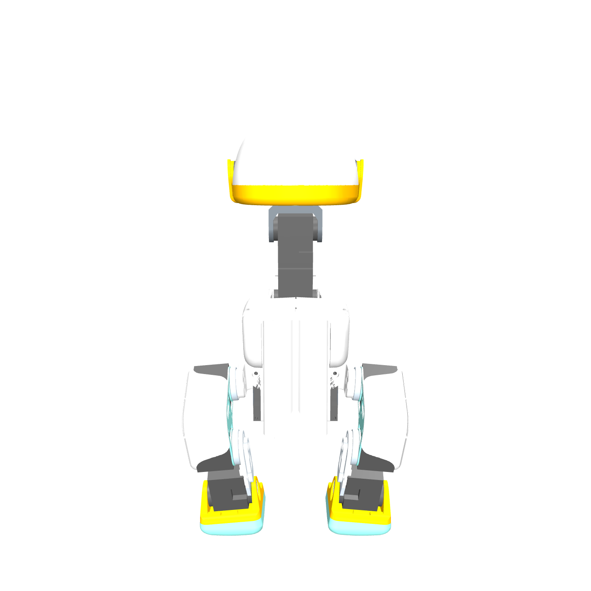
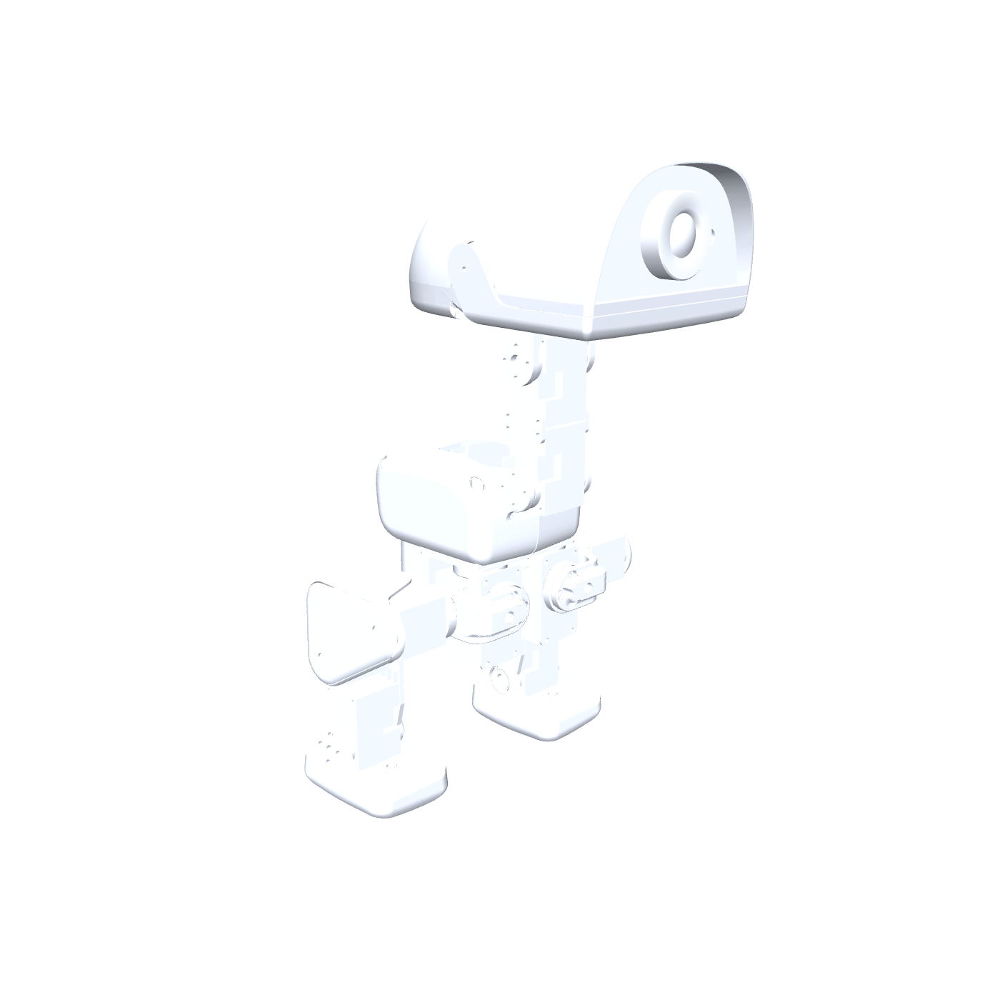

Microduck · factory pack · 工厂交付包
Microduck factory pack Microduck 工厂交付包
One document a factory can build from: what the product is, what is NOT ready, what to build, how a finished unit is accepted, what may and may not be sold, and where every underlying file sits in the repository.
供工厂直接使用的单一文件：产品是什么、哪些尚未就绪、要制造什么、成品如何验收、什么可售什么不可售，以及每个源文件在仓库中的位置。
Read this first · 请先阅读
NO PHYSICAL UNIT HAS EVER BEEN BUILT OR MEASURED. Not one Microduck has been assembled from these files, and no number in this pack was taken off a real robot. Everything dynamic here — walking, loads, safety factors, thermal, battery runtime — is SIMULATION: rigid-body simulation in MuJoCo and linear-elastic finite element in CalculiX, run on our own CAD. Everything static — millimetres, grams, seconds, prices — is measured, but measured off files: off the geometry with a CAD kernel, off the STL with a slicer, off a live distributor page. Treat every simulated result as a hypothesis your first five units will test, not as a property of the product.
从未制造或测量过任何实物样机。没有一台 Microduck 按本文件装配过，本交付包中的任何数字都不是从实物机器人上取得的。所有动态结果——行走、受力、安全系数、温升、续航——均为仿真：MuJoCo 刚体仿真与 CalculiX 线弹性有限元，基于我方 CAD 运行。所有静态数据——毫米、克、秒、价格——是实测，但测自文件：用 CAD 内核测几何、用切片软件测 STL、从供应商在线页面读取价格。请把每一项仿真结果视为待验证的假设，由你们的前五台样机来检验，而非产品的既有属性。
Order of reading for a factory: section 2 (what is not ready) first, so nothing is planned around an artifact that is not there; then WORK-BREAKDOWN.html, which cuts the open work into parcels of one engineer each; then FACTORY-QUESTIONS.html, which is the list of things only you can answer and which we ask you to answer before any tooling money is spent.
工厂建议阅读顺序：先看第 2 节（哪些尚未就绪），避免围绕不存在的文件做计划；再看 WORK-BREAKDOWN.html，其中把待办工作切分为每人一份的工作包；最后看 FACTORY-QUESTIONS.html，那是只有贵方能回答的问题清单，我们请求在投入任何模具费用前先行答复。
1The product 产品
Microduck is a 15-servo bipedal desk robot, about 25 cm tall standing, printed shells over a Dynamixel XL330 skeleton, with a Radxa-class compute board, a camera, a ToF sensor, a speaker and a microphone in the head, and an NP-F class camera battery in the trunk. This repository is a clean-room reconstruction: Pollen Robotics publish the simulation assets (meshes + MJCF) and the firmware, but NOT the mechanical CAD, the BOM or the boards. Section 6 states exactly which bytes came from where and what may be sold.
Microduck 是一台 15 舵机双足桌面机器人，站立高度约 25 cm，打印外壳包覆 Dynamixel XL330 骨架；头部装有 Radxa 级计算板、摄像头、ToF 传感器、扬声器与麦克风，躯干内为 NP-F 级相机电池。本仓库为洁净室重建：Pollen Robotics 公开了仿真资产（网格 + MJCF）与固件，但未公开机械 CAD、BOM 与电路板。第 6 节逐项说明每份数据的来源与可售范围。

正视图 — 我方 CAD，MuJoCo 渲染
out/compare/ours-front.png

左侧视图 — 同一模型、同一光照
out/compare/ours-prof-left.png

左前 45° 视图
out/compare/ours-iso-fl.png

装配完成状态（sim/assembly_steps_mj.py）
out/assembly/assembled.png
These are renders of OUR CAD, not photographs of a built robot. Product photographs, matched angle by angle against these renders, are in COMPARISON.html.
以上为我方 CAD 的渲染图，并非实物照片。逐角度匹配的产品照片见 COMPARISON.html。
| Quantity 量 | Value 数值 | Source class 来源类别 | Where 出处 |
|---|---|---|---|
| standing height | 25 cm | [P] | SPEC.md:31 |
| width | 14 cm | [P] | SPEC.md:32 |
| mass | "under 800 g" / 780 g (store) | [P] | SPEC.md:33 |
| summed MJCF inertial mass | 737.2 g over 15 bodies | [M] | SPEC.md:34 |
| zero-pose envelope (legs straight, head level) | 144.1 × 141.0 × 264.0 mm (x × y × z), feet 13.5 mm above the free-joint ground | [M] | SPEC.md:35 |
| STAND keyframe | trunk z = 120 mm; hip_roll −5°, hip_pitch −26.24°, knee −0.28°, ankle +25.95°, neck_pitch +20°, head_pitch +20° (both legs mirrored) — the crouch that makes 264 mm into 25 cm | [P] microduck_rl scene xml | SPEC.md:36 |
| colourways | Cream #f7e6cb (orange trim/beak), Graphite #6c6a68 (yellow), Lavender #bfa9cf (yellow), Sky #a9dbe8 (orange) — "four printed colourways" | [P] | SPEC.md:37 |
| MJCF material colours | shells 0.8/0.8/0.8 grey-white; beak/feet/ankles #fab601 yellow; soles + rigidity plate #89dad3 mint; shin #cfdbe5; jaw_soft/mouth_top #d9c1dd lilac (soft parts) | [M] | SPEC.md:38 |
Source classes: [P] published by Pollen Robotics · [M] measured by us off Pollen's own MJCF and meshes with a CAD kernel · [C] community-reported, unverified · [?] our inference. SPEC.md lines 1-10.
来源类别：[P] Pollen 官方公布 · [M] 我方用 CAD 内核测自 Pollen 的 MJCF 与网格 · [C] 社区提供、未经验证 · [?] 我方推断。见 SPEC.md 第 1-10 行。
Print figures are the sum of out/print/slice.json, sliced on Bambu Lab H2S (roster: H2S (2), 192.168.1.133, bed 340x320x340). They are per-piece prints, not plate times.
打印数据为 out/print/slice.json 之和，切片机型：Bambu Lab H2S (roster: H2S (2), 192.168.1.133, bed 340x320x340)。为单件打印时间，非整盘时间。
2What is NOT ready 哪些尚未就绪
Read this before you plan anything. A working PROTOTYPE is buildable from this pack today. A FACTORY RELEASE is not. Each row below is a measurement taken by a command you can re-run, not an opinion.
在做任何计划前请先读本节。今天可以按本交付包制作一台可工作的样机，但尚不能量产。下表每一行都是可复现命令的实测结果，不是判断。
| What 项目 | Measured 实测 | Why it is not ready 为何未就绪 | Who closes it 由谁解决 |
|---|---|---|---|
| drawing sheets PASS our own A2/A3/A4 standard 图纸通过我方 A2/A3/A4 标准 | 0 / 27 | Every sheet fails at least the occupancy, empty-rectangle, minimum-font, ISO-view-count and shaded-render-count rules; 24 of 27 also fail dimension coverage. 每张图纸至少在版面占用率、空白矩形、最小字号、等轴视图数量与着色渲染数量上不合格；其中 24 张同时尺寸标注覆盖率不足。 out/factory/measure/sheetcheck.json (bin/sheetcheck 2026-09-04 23:33:11) | agent, tonight (WF-SHEETS) for layout; a parametric rebuild for the mesh-backed parts 版面由软件代理今晚完成（WF-SHEETS）；网格来源零件需参数化重建 |
| parts with no drawing sheet at all 完全没有图纸的零件 | 6 | No sheet exists for microduck-bottom-head-shell, microduck-face-part, microduck-m12-lens, microduck-m12-lens-holder, microduck-trunk-shell-left, microduck-trunk-shell-right. This list is the UNION of two walks, because either alone is wrong by a part and this row was wrong by one until 2026-09-04: microduck-trunk-shell-right has no out/drawings folder at all, so bin/sheetcheck cannot see it (it only walks folders that exist); microduck-m12-lens has a folder with no sheet SVG but is not a printed part, so a walk of the print list cannot see it. 以下零件没有图纸：microduck-bottom-head-shell、microduck-face-part、microduck-m12-lens、microduck-m12-lens-holder、microduck-trunk-shell-left、microduck-trunk-shell-right。本清单是<b>两种遍历的并集</b>，因为单用其中任何一种都会漏掉零件——直到 2026-09-04 本行仍漏了一个：microduck-trunk-shell-right 根本没有 out/drawings 目录，bin/sheetcheck 只遍历已存在的目录，因而看不到它；microduck-m12-lens 有目录但没有图纸 SVG，且不属于打印件，因而遍历打印清单也看不到它。 out/print/slice.json against out/drawings/ | agent, tonight (WF-SHEETS) 软件代理，今晚（WF-SHEETS） |
| custom PCBs that pass their own DRC 通过自身 DRC 的定制 PCB | 0 / 3 | Robot HAT FAIL; imu_to_dxl v2 FAIL; Banana battery-contact PCB CANNOT DETERMINE. 三块板的 DRC 结果：Robot HAT FAIL；imu_to_dxl v2 FAIL；Banana battery-contact PCB CANNOT DETERMINE。 PCB-PACKAGE.html §3.4, electronics/*/out/fab/README.txt | an electronics engineer — a desk job, but not an agent's 需电子工程师完成（案头工作，非软件代理可代劳） |
| fastener rows in the assembly BOM against the M2 hole census 装配 BOM 中的紧固件行数 / M2 孔数 | 7 / 145 | READ THE RECONCILIATION IN SECTION 3.3 BEFORE ORDERING ANYTHING. Four different fastener counts exist in this repository and they count different things: 145 hole features (counterbores double-counted), 79 measured interface features, 64 screws placed in the model so far, and 325 pieces on the buy list including nuts and inserts. The hardware IS already on the buy list; what is missing is the per-hole schedule — which screw in which hole, at what length, to what torque. 下单前请先阅读 3.3 节的对账表。本仓库中存在四个互不相同的紧固件计数，统计对象各异：145 个孔特征（沉孔被重复计数）、79 项实测接口特征、目前已装入模型的 64 颗螺钉、以及含螺母与热熔螺母的采购件数 325 件。硬件其实已列入采购；缺的是逐孔明细——哪颗螺钉装在哪个孔、用多长、拧到多大扭矩。 ce-assemblies/microduck/current/bom.json, SPEC.md:75-76 | agent, tonight (WF-FASTENERS) for the census; a person for the torque 普查由软件代理今晚完成（WF-FASTENERS）；扭矩必须由人确定 |
| harness rows carrying a cut tolerance 带下料公差的线束行 | 0 / 23 | Lengths are route floors plus slack, rounded to 5 mm, measured in CAD. One built loom, measured, turns them into cut lengths. 现有长度为 CAD 走线下限加余量并取整至 5 mm。需实做一套线束并测量后方可转为下料长度。 wiring/cables.json | a person, with a real loom on a bench 需由人在台架上实做线束测量 |
| assembly steps that assume knowledge not on the page 依赖文外知识的装配步骤 | 23 | A stranger stops at the first one. Each is listed in section 3.6 with what closes it. 陌生工程师会卡在第一条。3.6 节逐条列出并说明如何解决。 ce-assemblies/microduck/iterations/v0.0.1/manual/MANUAL.md, tools/data/playbook.json | mixed — some an agent tonight, the torques a person 部分由软件代理今晚完成，扭矩必须由人确定 |
| bought lines with no lead time stated by any vendor 无任何供应商给出交期的外购项 | 11 / 32 | Lines B3, B7, B8, B10, B13, B15, B16, B17, B18b, B19a, B19b price fine but cannot be scheduled. 以下项价格可查但无法排产：B3、B7、B8、B10、B13、B15、B16、B17、B18b、B19a、B19b。 spec/sourcing.json rev C | a buyer — an RFQ, not a search 需采购人员发询价单（非网络搜索可得） |
| open CANNOT DETERMINE items on the CURATED work queue 已整理未定项工作队列 | 139 | This is a CURATED harvest, not a repository-wide count, and the difference matters. All 139 name what would settle them. The repository-wide census in the file beside it, out/open/cannot-determine.json, reads 5012 distinct subjects over 6182 occurrences in 2219 files — an UPPER BOUND, because one item republished across generated documents is counted once per wording. The real defect is neither number: only 514 of those 5012 subjects state what would close them, so 4498 have no closure route written down. 这是<b>人工整理</b>的工作队列，不是全仓库计数，二者区别重要。这 139 项均写明了如何定案。旁边的全仓库普查文件 out/open/cannot-determine.json 在 2219 个文件中得到 5012 个独立主题、6182 处出现——那是<b>上限</b>，因为同一项在多份生成文档中重复出现会被多次计入。真正的缺陷不在数字：5012 个主题中只有 514 个写明了如何定案，其余 4498 个根本没有写下解决路径。 out/open/cannot-determine-harvest.json (139) AND out/open/cannot-determine.json (5012); reconciled in out/factory/reconcile.json unknowns | agent, tonight (WF-UNKNOWNS) for the desk-answerable ones 可查证部分由软件代理今晚完成（WF-UNKNOWNS） |
| physical units ever built or measured 已制造或测量过的实物样机 | 0 | The test plan is complete and has been exercised zero times. Every dynamic figure in this repository is simulation. 测试计划完整但执行次数为零。本仓库中所有动态数据均为仿真结果。 spec/test-plan.json (0 tests exercised), readiness.json test row | the factory — this is the whole point of the pack 由工厂完成——这正是本交付包的目的 |
Every one of these is cut into parcels of one engineer each in WORK-BREAKDOWN.html (30 parcels). Work an agent is closing tonight is marked IN FLIGHT there so you do not duplicate it.
上述每一项均已在 WORK-BREAKDOWN.html 中切分为每人一份的工作包（共 30 个）。今晚由软件代理完成的工作在其中标记为 IN FLIGHT，请勿重复。
Work an agent may already be closing · 软件代理可能已在处理的工作
Listed so you do not duplicate it — but “in flight” is measured here, not asserted: every path each lane owns is stat'd and the age of its newest byte is printed. A lane whose newest artifact is older than 90 minutes, or which has written nothing at all, does NOT reserve work from you. Measured 2026-09-05T00:05:56+08:00: 3 of 6 lanes are LIVE; WF-UNKNOWNS, WF-HARNESS, WF-SOURCES are not, and that work is assignable.
列出以避免重复劳动——但此处的“进行中”是实测结果而非断言：对每条工作流占用的全部路径读取文件属性，并给出最新字节的写入时间。若最新产出已超过 90 分钟，或根本没有产出，则该工作流不能为自己保留工作。本次实测：3 / 6 条工作流处于活跃状态。
| Workflow 工作流 | Liveness 活跃状态 | What it is closing 工作内容 | Paths it owns (do not write these) 其占用路径（请勿写入） |
|---|---|---|---|
| WF-SHEETS | LIVE newest byte 33.2 min ago DO NOT ASSIGN | Drawing-sheet rebuild to the A2/A3/A4 standard; every sheet regenerated 按 A2/A3/A4 标准重建全部图纸 | ce-cad/cecad/autosheet.py, ce-cad/cecad/sheets.py, out/drawings/ an owned path was written 33 minutes ago; do not duplicate this work |
| WF-FASTENERS | LIVE newest byte 30.6 min ago DO NOT ASSIGN | Fastener census and assembly (every screw, nut, insert, ball joint into the assembly through a connection) 紧固件普查并装入装配体（每颗螺钉、螺母、热熔嵌件、球头） | out/fasteners/, FASTENERS.html, ce-assemblies/microduck bom an owned path was written 31 minutes ago; do not duplicate this work |
| WF-UNKNOWNS | QUIET newest byte 321.9 min ago ASSIGNABLE — ask first | 139-unknown resolution, cross-document reconciliation, three adversarial critics 解决 139 项未定项、跨文档核对、三名对抗式审阅 | out/open/ artifacts exist but the newest is 5.4 hours old, longer than the 90-minute liveness window. Ask before assuming it is still running; if it is not, its parcels are OPEN. |
| WF-POSE | LIVE newest byte 41.3 min ago DO NOT ASSIGN | Photo pose-match and wiring visibility in the renders 照片姿态匹配与渲染中的布线可见性 | out/pose/, POSE-MATCH.html, out/wiring/ an owned path was written 41 minutes ago; do not duplicate this work |
| WF-HARNESS | NO ARTIFACT nothing on disk ASSIGNABLE — ask first | Harness in CAD and a per-joint dossier 线束进入 CAD 与逐关节档案 | out/harness/, out/joints/, HARNESS.html, JOINTS.html not one path this lane owns exists on disk, so nothing measurable says this work is under way. Do NOT hold work back for it: treat its parcels as OPEN and assign them. |
| WF-SOURCES | QUIET newest byte 1020.9 min ago ASSIGNABLE — ask first | New-source ingestion (MakerWorld 3250889, microduck_rl develop) and the convergence scoreboard 新来源导入（MakerWorld 3250889、microduck_rl develop）与收敛记分板 | out/sources/, out/converge/, CONVERGENCE.html, INTERNALS.html, SOURCES.html artifacts exist but the newest is 17.0 hours old, longer than the 90-minute liveness window. Ask before assuming it is still running; if it is not, its parcels are OPEN. |
3What to build 制造内容
Six deliverable classes: drawings, printed parts, bought parts, boards, harness, assembly. Each subsection carries its own verdict column and its own source file.
六类交付物：图纸、打印件、外购件、电路板、线束、装配。每小节均带判定列与来源文件。
3.1 Drawing set · 图纸集
One folder per part in out/drawings/. Each folder holds an SVG sheet, a PDF and the JSON of facts it was drawn from. The verdict column is our own bin/sheetcheck against docs/MANUFACTURING-REQUIREMENTS.md A2/A3/A4 — a standard we wrote to be strict, not the ISO minimum. A FAIL here does not mean the geometry is wrong; it means the SHEET does not yet carry enough dimensions, views or text size for a stranger to machine from without asking us.
out/drawings/ 下每个零件一个文件夹，内含 SVG 图纸、PDF 与绘图依据的 JSON。判定列为我方 bin/sheetcheck 按 docs/MANUFACTURING-REQUIREMENTS.md A2/A3/A4 标准的检查结果——该标准由我方自定，严于 ISO 最低要求。此处 FAIL 不代表几何错误，而是图纸尚未标注足够的尺寸、视图或字号，陌生工程师无法在不询问我方的情况下加工。
| Sheet 图纸 | Kind 类型 | Verdict 判定 | Dim cov. 尺寸覆盖 | Min font mm 最小字号 | ISO views 等轴视图 | What the sheet is missing 图纸缺什么 |
|---|---|---|---|---|---|---|
| microduck-ankle-left | DRAW | NOT YET 尚未就绪 | 49.4 % | 1.7 | 2 | 49.4 % of enumerated features dimensioned; layout fails 7 of 8 rules (dim_coverage, coverage, empty_rect, font, iso, renders, curve_density). |
| microduck-ankle-right | DRAW | NOT YET 尚未就绪 | 49.4 % | 1.7 | 2 | 49.4 % of enumerated features dimensioned; layout fails 7 of 8 rules (dim_coverage, coverage, empty_rect, font, iso, renders, curve_density). |
| microduck-banana-pcb-locker | DRAW | NOT YET 尚未就绪 | 56.5 % | 1.7 | 2 | 56.5 % of enumerated features dimensioned; layout fails 7 of 8 rules (dim_coverage, coverage, empty_rect, font, iso, renders, curve_density). |
| microduck-bearing-roll | DRAW | NOT YET 尚未就绪 | 64.3 % | 1.7 | 2 | 64.3 % of enumerated features dimensioned; layout fails 7 of 8 rules (dim_coverage, coverage, empty_rect, font, iso, renders, curve_density). |
| microduck-bottom-head-shell | NONE | NOT YET 尚未就绪 | CD | CD | CD | No sheet can be drawn: the part has no parametric geometry (a vendor mesh only). |
| microduck-eye-ring | NOT YET 尚未就绪 | 0.0 % | 2.4 | 2 | 0.0 % of enumerated features dimensioned; layout fails 6 of 8 rules (dim_coverage, coverage, empty_rect, font, iso, renders). | |
| microduck-face-part | NONE | NOT YET 尚未就绪 | CD | CD | CD | No sheet can be drawn: the part has no parametric geometry (a vendor mesh only). |
| microduck-foot-left | DRAW | NOT YET 尚未就绪 | 73.3 % | 1.7 | 2 | 73.3 % of enumerated features dimensioned; layout fails 7 of 8 rules (dim_coverage, coverage, empty_rect, font, iso, renders, curve_density). |
| microduck-foot-right | DRAW | NOT YET 尚未就绪 | 73.3 % | 1.7 | 2 | 73.3 % of enumerated features dimensioned; layout fails 7 of 8 rules (dim_coverage, coverage, empty_rect, font, iso, renders, curve_density). |
| microduck-hip-bracket | DRAW | NOT YET 尚未就绪 | 74.1 % | 1.7 | 2 | 74.1 % of enumerated features dimensioned; layout fails 7 of 8 rules (dim_coverage, coverage, empty_rect, font, iso, renders, curve_density). |
| microduck-jaw | NOT YET 尚未就绪 | 12.5 % | 2.4 | 2 | 12.5 % of enumerated features dimensioned; layout fails 6 of 8 rules (dim_coverage, coverage, empty_rect, font, iso, renders). | |
| microduck-jaw-soft | NOT YET 尚未就绪 | CD | 2.4 | 2 | feature census refused (mesh-backed part, not a parametric solid); layout fails 5 of 8 rules (coverage, empty_rect, font, iso, renders). | |
| microduck-m12-lens | NONE | NOT YET 尚未就绪 | CD | CD | CD | No sheet can be drawn: the part has no parametric geometry (a vendor mesh only). |
| microduck-m12-lens-holder | NONE | NOT YET 尚未就绪 | CD | CD | CD | No sheet can be drawn: the part has no parametric geometry (a vendor mesh only). |
| microduck-motor-support | DRAW | NOT YET 尚未就绪 | 85.3 % | 1.7 | 2 | 85.3 % of enumerated features dimensioned; layout fails 7 of 8 rules (dim_coverage, coverage, empty_rect, font, iso, renders, curve_density). |
| microduck-neck-pitch-bracket | DRAW | NOT YET 尚未就绪 | 52.0 % | 1.7 | 2 | 52.0 % of enumerated features dimensioned; layout fails 7 of 8 rules (dim_coverage, coverage, empty_rect, font, iso, renders, curve_density). |
| microduck-neck-plate | DRAW | NOT YET 尚未就绪 | 100.0 % | 1.7 | 2 | layout fails 7 of 8 rules (dim_coverage, coverage, empty_rect, font, iso, renders, curve_density). |
| microduck-power-support | DRAW | NOT YET 尚未就绪 | 31.6 % | 1.7 | 2 | 31.6 % of enumerated features dimensioned; layout fails 7 of 8 rules (dim_coverage, coverage, empty_rect, font, iso, renders, curve_density). |
| microduck-robot-hat-pcb | DRAW | NOT YET 尚未就绪 | 35.6 % | 1.7 | 2 | 35.6 % of enumerated features dimensioned; layout fails 6 of 8 rules (dim_coverage, coverage, empty_rect, font, iso, renders). |
| microduck-shin | DRAW | NOT YET 尚未就绪 | 45.0 % | 1.7 | 2 | 45.0 % of enumerated features dimensioned; layout fails 7 of 8 rules (dim_coverage, coverage, empty_rect, font, iso, renders, curve_density). |
| microduck-soft-mouth-top | NOT YET 尚未就绪 | CD | 2.4 | 2 | feature census refused (mesh-backed part, not a parametric solid); layout fails 5 of 8 rules (coverage, empty_rect, font, iso, renders). | |
| microduck-sole-left | NOT YET 尚未就绪 | 33.3 % | 2.4 | 2 | 33.3 % of enumerated features dimensioned; layout fails 6 of 8 rules (dim_coverage, coverage, empty_rect, font, iso, renders). | |
| microduck-sole-right | NOT YET 尚未就绪 | 33.3 % | 2.4 | 2 | 33.3 % of enumerated features dimensioned; layout fails 6 of 8 rules (dim_coverage, coverage, empty_rect, font, iso, renders). | |
| microduck-speaker | DRAW | NOT YET 尚未就绪 | 100.0 % | 1.7 | 2 | layout fails 5 of 8 rules (coverage, empty_rect, font, iso, renders). |
| microduck-top-head-shell | NOT YET 尚未就绪 | 10.7 % | 2.4 | 2 | 10.7 % of enumerated features dimensioned; layout fails 6 of 8 rules (dim_coverage, coverage, empty_rect, font, iso, renders). | |
| microduck-trunk-base | DRAW | NOT YET 尚未就绪 | 62.2 % | 1.7 | 2 | 62.2 % of enumerated features dimensioned; layout fails 6 of 8 rules (dim_coverage, coverage, empty_rect, font, iso, renders). |
| microduck-trunk-shell-left | NONE | NOT YET 尚未就绪 | CD | CD | CD | No sheet can be drawn: the part has no parametric geometry (a vendor mesh only). |
| microduck-trunk-shell-right | NONE | NOT YET 尚未就绪 | CD | CD | CD | No sheet can be drawn: the part has no parametric geometry (a vendor mesh only). |
| microduck-upper-leg-left | DRAW | NOT YET 尚未就绪 | 35.5 % | 1.7 | 2 | 35.5 % of enumerated features dimensioned; layout fails 7 of 8 rules (dim_coverage, coverage, empty_rect, font, iso, renders, curve_density). |
| microduck-upper-leg-right | DRAW | NOT YET 尚未就绪 | 35.5 % | 1.7 | 2 | 35.5 % of enumerated features dimensioned; layout fails 7 of 8 rules (dim_coverage, coverage, empty_rect, font, iso, renders, curve_density). |
| microduck-upper-leg-rigidity-plate | DRAW | NOT YET 尚未就绪 | 56.5 % | 1.7 | 2 | 56.5 % of enumerated features dimensioned; layout fails 6 of 8 rules (dim_coverage, coverage, empty_rect, font, iso, renders). |
| microduck-yaw-roll-motion | DRAW | NOT YET 尚未就绪 | 70.8 % | 1.7 | 2 | 70.8 % of enumerated features dimensioned; layout fails 7 of 8 rules (dim_coverage, coverage, empty_rect, font, iso, renders, curve_density). |
| microduck-yaw2roll | DRAW | NOT YET 尚未就绪 | 37.0 % | 1.7 | 2 | 37.0 % of enumerated features dimensioned; layout fails 7 of 8 rules (dim_coverage, coverage, empty_rect, font, iso, renders, curve_density). |
3.2 Printed parts · 打印件
Every gram and every second below came out of BambuStudio through ce-slice, on the printer named in the header, at the layer height and profile named in the row. None was derived from volume. Orientation is part of the number: the same file in a different orientation slices to a different time.
下表每一个克数与秒数均由 BambuStudio 经 ce-slice 实际切片得出，机型见表头，层高与配置见各行，绝非由体积换算。摆放方向是数字的一部分：同一文件换个方向，时间就不同。
Profile actually used, read off the installed BambuStudio profile with its inherit chain resolved (/Applications/BambuStudio.app/Contents/Resources/profiles/BBL/process/0.20mm Standard @BBL H2S.json): layer_height = 0.2 mm; initial_layer_print_height = 0.2 mm; wall_loops = 2; sparse_infill_density = 15 %; sparse_infill_pattern = grid; top_shell_layers = 5; bottom_shell_layers = 3; wall_generator = classic
| Part 零件 | Mat. 材料 | Qty 数量 | g/pc 克/件 | s/pc 秒/件 | Layer 层高 | Watertight 水密 | Verdict 判定 | Orientation / warning / licence 摆放 / 警告 / 许可 |
|---|---|---|---|---|---|---|---|---|
| microduck-ankle-left | PLA | 1 | 6.1845 | 1317 | 0.2 | yes | NOT YET 尚未就绪 | auto-orient: bearing bore vertical · WARN: floating regions - enable supports · licence: CC BY-SA-NC (Pollen sim mesh) |
| microduck-ankle-right | PLA | 1 | 6.1821 | 1314 | 0.2 | yes | NOT YET 尚未就绪 | auto-orient: bearing bore vertical · WARN: floating regions - enable supports · licence: CC BY-SA-NC (Pollen sim mesh) |
| microduck-banana-pcb-locker | PLA | 1 | 0.6794 | 140 | 0.2 | yes | READY TO BUILD FROM 可直接制造 | bar flat on its 54 mm face, eyes up · licence: ours |
| microduck-bearing-roll | PLA | 2 | 0.8537 | 164 | 0.2 | yes | READY TO BUILD FROM 可直接制造 | 3 mm plate flat, bore vertical · licence: ours |
| microduck-bottom-head-shell | PLA | 1 | 28.2837 | 3556 | 0.2 | yes | READY TO BUILD FROM 可直接制造 | outer face down per auto-orient · WARN: floating cantilever - enable supports · licence: CC BY-SA-NC (Pollen sim mesh) |
| microduck-eye-ring | PLA | 1 | 2.7130 | 352 | 0.2 | yes | READY TO BUILD FROM 可直接制造 | ring flat on the bed · licence: CC BY-SA-NC (Pollen sim mesh) |
| microduck-face-part | PLA | 1 | 6.6397 | 910 | 0.2 | yes | READY TO BUILD FROM 可直接制造 | face plate back-side down, eyes up · licence: CC BY-SA-NC (Pollen sim mesh) |
| microduck-foot-left | PLA | 1 | 13.3514 | 1973 | 0.2 | yes | NOT YET 尚未就绪 | sole face down, toes up · WARN: floating regions - enable supports · licence: CC BY-SA-NC (Pollen sim mesh) |
| microduck-foot-right | PLA | 1 | 13.3526 | 1971 | 0.2 | yes | NOT YET 尚未就绪 | sole face down, toes up · WARN: floating regions - enable supports · licence: CC BY-SA-NC (Pollen sim mesh) |
| microduck-hip-bracket | PLA | 2 | 3.8126 | 1067 | 0.2 | yes | NOT YET 尚未就绪 | auto-orient: bracket web down, bearing seat vertical · licence: CC BY-SA-NC (Pollen sim mesh) |
| microduck-jaw | PLA | 1 | 10.8958 | 1918 | 0.2 | yes | READY TO BUILD FROM 可直接制造 | beak underside down per auto-orient · licence: CC BY-SA-NC (Pollen sim mesh) |
| microduck-jaw-soft | TPU | 1 | 8.8216 | 2679 | 0.2 | yes | READY TO BUILD FROM 可直接制造 | 8.4 mm lip flat on the bed · licence: CC BY-SA-NC (Pollen sim mesh) |
| microduck-m12-lens-holder | PLA | 1 | 1.3982 | 403 | 0.2 | yes | READY TO BUILD FROM 可直接制造 | threaded bore vertical · licence: CC BY-SA-NC (Pollen sim mesh) |
| microduck-motor-support | PLA | 1 | 9.1993 | 1265 | 0.2 | yes | NOT YET 尚未就绪 | plate flat, servo pockets up · WARN: floating cantilever - enable supports · licence: CC BY-SA-NC (Pollen sim mesh) |
| microduck-neck-pitch-bracket | PLA | 1 | 4.3782 | 1185 | 0.2 | yes | NOT YET 尚未就绪 | auto-orient: bearing seat vertical · WARN: floating regions - enable supports · licence: CC BY-SA-NC (Pollen sim mesh) |
| microduck-neck-plate | PLA | 2 | 0.5523 | 127 | 0.2 | yes | NOT YET 尚未就绪 | 2 mm plate flat on the bed · licence: CC BY-SA-NC (Pollen sim mesh) |
| microduck-power-support | PLA | 1 | 13.1477 | 2302 | 0.2 | yes | READY TO BUILD FROM 可直接制造 | auto-orient: tall cradle laid on its back to cut supports · WARN: floating regions - enable supports · licence: ours |
| microduck-shin | PLA | 2 | 3.5999 | 869 | 0.2 | yes | READY TO BUILD FROM 可直接制造 | 8 mm plate flat, rim walls up · licence: ours |
| microduck-soft-mouth-top | TPU | 1 | 3.2431 | 1012 | 0.2 | yes | READY TO BUILD FROM 可直接制造 | 3.3 mm lip flat on the bed · licence: CC BY-SA-NC (Pollen sim mesh) |
| microduck-sole-left | TPU | 1 | 7.0704 | 2497 | 0.2 | yes | NOT YET 尚未就绪 | sole tread face down, dead flat · licence: CC BY-SA-NC (Pollen sim mesh) |
| microduck-sole-right | TPU | 1 | 7.0677 | 2491 | 0.2 | yes | NOT YET 尚未就绪 | sole tread face down, dead flat · licence: CC BY-SA-NC (Pollen sim mesh) |
| microduck-top-head-shell | PLA | 1 | 34.6097 | 4127 | 0.2 | yes | READY TO BUILD FROM 可直接制造 | dome up, rim down (auto-orient confirms) · WARN: floating regions - enable supports · licence: CC BY-SA-NC (Pollen sim mesh) |
| microduck-trunk-base | PLA | 1 | 1.8239 | 280 | 0.2 | yes | READY TO BUILD FROM 可直接制造 | flat plate: largest face down, holes vertical · licence: ours |
| microduck-trunk-shell-left | PLA | 1 | 13.0364 | 1792 | 0.2 | yes | READY TO BUILD FROM 可直接制造 | shell: flat rim (mating face) down, dome up · licence: CC BY-SA-NC (Pollen sim mesh) |
| microduck-trunk-shell-right | PLA | 1 | 12.8237 | 1754 | 0.2 | yes | READY TO BUILD FROM 可直接制造 | shell: flat rim (mating face) down, dome up · licence: CC BY-SA-NC (Pollen sim mesh) |
| microduck-upper-leg-left | PLA | 1 | 4.6681 | 916 | 0.2 | yes | READY TO BUILD FROM 可直接制造 | auto-orient: servo cavity opening up · WARN: floating cantilever - enable supports · licence: ours |
| microduck-upper-leg-right | PLA | 1 | 4.6678 | 921 | 0.2 | yes | READY TO BUILD FROM 可直接制造 | auto-orient: servo cavity opening up · WARN: floating cantilever - enable supports · licence: ours |
| microduck-upper-leg-rigidity-plate | PLA | 2 | 1.0002 | 204 | 0.2 | yes | NOT YET 尚未就绪 | 1 mm plate dead flat on the bed · licence: CC BY-SA-NC (Pollen sim mesh) |
| microduck-yaw-roll-motion | PLA | 1 | 4.7084 | 933 | 0.2 | NO — 42 open edges | NOT YET 尚未就绪 | auto-orient: both bearing bores vertical · WARN: floating regions; sliced AS MODELLED - auto-orient (-100) crashed the slicer on this mesh · licence: CC BY-SA-NC (Pollen sim mesh) |
| microduck-yaw2roll | PLA | 2 | 2.9568 | 787 | 0.2 | yes | READY TO BUILD FROM 可直接制造 | auto-orient: servo pocket up, bearing bore vertical · licence: ours |
Slicing flags carried forward: microduck-m12-lens-holder may be a bought part (CANNOT DETERMINE, docs/PARTS.md row 27) - sliced anyway · TPU durometer is inferred: Pollen says nothing; community says 90-95A; the H2S 0.4 preset resolves to Bambu TPU 85A · 11 parts carry slicer support warnings - see slicer_warning per part; the 0.20mm Standard preset slices without supports, production plates should enable them
Correction, measured this hour: that flag sentence says 11 parts carry a slicer support warning; counting the rows gives 12 (microduck-ankle-left, microduck-ankle-right, microduck-bottom-head-shell, microduck-foot-left, microduck-foot-right, microduck-motor-support, microduck-neck-pitch-bracket, microduck-power-support, microduck-top-head-shell, microduck-upper-leg-left, microduck-upper-leg-right, microduck-yaw-roll-motion). The extra one is the row whose warning is not only about supports. Plan supports for 12 parts, not 11.
本小时实测更正：该提示句称有 11 个零件存在切片支撑警告；逐行计数为 12 个。请按 12 个零件准备支撑，而非 11 个。
3.3 Bought parts · 外购件
32 bought lines. Every price was read off a live distributor page on the date in the row — no catalogue averages, no estimates. Where no vendor states a lead time, the cell says so; that is a real hole in the plan and one of the questions in FACTORY-QUESTIONS.html.
共 32 项外购件。每个价格均于表中日期从供应商在线页面读取——无目录均价、无估算。若无供应商给出交期，单元格如实标注；这是计划中的真实缺口，也是 FACTORY-QUESTIONS.html 中的提问之一。
| Line 编号 | Item 品名 | Qty/robot 每台数量 | Unit price 单价 | MOQ 起订量 | Vendor read 已读取供应商 | Lead time 交期 | Verdict / what is missing 判定 / 缺什么 |
|---|---|---|---|---|---|---|---|
| B1 | Dynamixel XL330-M288-T smart servo | 15 | USD 23.9000 @1 | 1 | ROBOTIS International | yes | READY TO BUILD FROM 可直接制造 |
| B2 | Robot Cable-X3P 180 mm, 10-pack (Dynamixel bus leads) | 2 | USD 15.5000 @1 | 1 | ROBOTIS International | yes | READY TO BUILD FROM 可直接制造 |
| B3 | Radxa ZERO 3W single-board computer | 1 | USD 20.0000 @1 | 1 | Arace Tech | none stated | NOT YET 尚未就绪 The line as specified is unbuyable: the 1 GB / 32 GB SKU is not in Radxa's catalogue, and every 1 GB variant read on 2026-09-02 was SOLD OUT at every distributor reached. Two distributors did render prices, so the failure is availability and specification - not readability. |
| B4 | NP-F550-form-factor 2S Li-ion pack, 7.2 V, 2600 mAh (+ dual-charger share) | 1 | USD 24.9500 @1 | 1 | NextBatteries | yes | READY TO BUILD FROM 可直接制造 |
| B6 | IMX219 camera board, M12 mount, with lens | 1 | USD 12.5000 @10 | 1 | Seeed Studio | yes | READY TO BUILD FROM 可直接制造 |
| B7 | M12 wide-angle lens (only if the camera board is bought bare) | 1 | USD 7.9900 @1 | 1 | UCTRONICS | none stated | CANNOT DETERMINE 无法判定 Downgraded from PASS on 2026-09-03 by the same standard that downgraded B12. Two distributors do carry a price on a real product page, but they price TWO DIFFERENT LENSES and neither is shown to be the right one. (1) Required FOV is CANNOT DETERMINE - Pollen's press kit says it is 'still being finalised' and the only community figure is ~62 deg HFOV (docs/ELECTRONICS-AND-SOFTWARE.md:225, flagged unverified). Both priced lenses are far wider than that: 110 deg (Arducam LN180) and 118 deg (Pi Hut LN007), both measured on a 1/4-inch sensor as the vendor pages state. (2) The Pi Hut part is 20.0000 mm across against Pollen's modelled `lens` at 16.9400 mm diameter (out/verify/mech_dims.json) - 3.0600 mm oversize, so it cannot be the modelled part. That leaves ONE candidate lens with one distributor, which is not a sourced line. The UCTRONICS price stays in Table 1 because it was read, and is broken out there as coming from a line this document does not grade buyable. What settles it: Pollen stating the FOV, or a lens measured off a production unit; then this line is one page away from PASS. |
| B8 | 22-pin 0.5 mm MIPI CSI FFC ribbon, Radxa to camera | 1 | GBP 2.0000 @1 | 1 | Pimoroni (UK) | none stated | READY TO BUILD FROM 可直接制造 Two distributors now carry a 22-pin 0.5 mm camera ribbon at a read price. The line is PASS on SOURCING and still open on LENGTH, and the two are not the same question: the shortest catalogue part found anywhere is Pimoroni's 38 mm SC0004, and our measured route floor is 13.3 mm with a 15 mm cut (wiring/CABLES.md row 20). Every buyable ribbon is at least 2.5x too long, so the head must either absorb ~23 mm of folded flex or a custom-length FFC must be ordered. That is a mechanical finding, not a price one. |
| B9 | Time-of-Flight 8x8 multizone ranger (module or bare die) | 1 | USD 5.7670 @3600 | 1 | DigiKey | yes | READY TO BUILD FROM 可直接制造 |
| B10 | Ball bearing 22 x 16 x 4 mm (thin section) | 11 | USD 4.0000 @1000 | 1000 | Jiang Xin Technology (Guangdong, via made-in-china.com) | none stated | READY TO BUILD FROM 可直接制造 |
| B11 | Ball bearing 15 x 10 x 3 mm | 3 | USD 4.1310 @50 | 1 | Bearings Direct (US) | yes | READY TO BUILD FROM 可直接制造 |
| B12 | Speaker, 35 x 25 x 7 mm, 8 ohm, 2 W (head) | 1 | USD 4.8900 @1008 | 1 | DigiKey | yes | CANNOT DETERMINE 无法判定 Downgraded from PASS by this document's own consistency check. The two priced parts are BOTH DigiKey lines, so there is one distributor, not two; the third reading is a different Visaton variant in another currency; and neither priced part FITS - Soberton's SPM-2035NU is 39 x 20 x 8.2 mm and Visaton's K 28.40 is 40 x 28 x 11.7 mm against a 35 x 25 x 7 mm cavity. No distributor anywhere prices a 35 x 25 x 7 part. Two prices for two parts that do not fit is not a sourced line. |
| B13 | Microphone(s) | CANNOT DETERMINE | no priced offer | — | — | none stated | CANNOT DETERMINE 无法判定 Nothing about this line is known - not the part, not the type, not the count, not the placement. There is no URL to try because there is no part to look up. |
| B14 | NFC reader IC + 2 antennas (head and beak) | 1 | USD 3.2940 @1000 | 1 | LCSC | yes | READY TO BUILD FROM 可直接制造 Two distributors with full read tier tables for EACH candidate. Which candidate is fitted is a separate unknown and is stated as such. |
| B15 | Camera-in-use indicator LED | 1 | no priced offer | — | — | none stated | CANNOT DETERMINE 无法判定 Nothing is known beyond the press kit sentence. A 0603 LED is a five-cent part; the reason this stays open is that its placement is a mechanical and regulatory question (a privacy indicator), not a price question. |
| B16 | Bluetooth gamepad (Xbox-style) | 1 | no priced offer | — | — | none stated | CANNOT DETERMINE 无法判定 The gamepad is INCLUDED in Pollen's $399 retail bundle, so no price for it alone exists on any Pollen page; and the model is unnamed, so no third-party price applies to it. |
| B17 | USB-C cable | 1 | no priced offer | — | — | none stated | CANNOT DETERMINE 无法判定 Included in the retail bundle; no separate price and no specification. |
| B18a | M2 x 6 socket head cap screw, A2 stainless, DIN 912 | 80 | EUR 0.0434 @100 | 1 | RST-Versand (DE) | yes | READY TO BUILD FROM 可直接制造 Two distributors with a read price (RST-Versand DE in EUR with tiers to 100; ModelFixings UK in GBP with tiers to 25). Neither publishes anything above 100 pieces, so the @1000-robot figure is a ceiling, and there is still NO USD price for this line - it does not enter the USD subtotal. |
| B18b | M2 socket head cap screws, other lengths (x4, x8, x12) + M2 nuts + M2.5x6 | 185 | GBP 0.0800 @10 | 10 | ModelFixings (UK) | none stated | CANNOT DETERMINE 无法判定 Only ONE distributor rendered a price for these sizes (ModelFixings, GBP inc VAT, 25-piece packs), so the two-distributor bar is not met; the fifth size (M2.5x6) has no price anywhere; and the nut ModelFixings prices is steel BZP, not the A2 stainless the rest of the schedule specifies. The line moved from 'no price at all' to 'one shop, one currency, four of five sizes' - which is progress, and is not a price. |
| B18c | M2 heat-set threaded inserts, brass, ~3.0 mm | 60 | GBP 0.0974 @100 | 100 | Vector 3D (UK) | yes | READY TO BUILD FROM 可直接制造 |
| B19a | PLA filament (hard printed parts) | 0.2183 | USD 22.9900 @1 | 1 | GigaParts (US) | none stated | READY TO BUILD FROM 可直接制造 |
| B19b | TPU filament (soft parts: soles x2, jaw_soft, soft_mouth_top) | 0.0262 | USD 38.9900 @1 | 1 | GigaParts (US) | none stated | READY TO BUILD FROM 可直接制造 |
| P1c | TLV320AIC3104IRHBR stereo audio codec (on the Robot HAT) | 1 | USD 1.2288 @1000 | 1 | LCSC | yes | READY TO BUILD FROM 可直接制造 |
| P2c | LSM6DSV16X 6-axis IMU (on the imu_to_dxl board, Dynamixel slave ID 200) | 1 | USD 2.4445 @1000 | 1 | LCSC | yes | READY TO BUILD FROM 可直接制造 |
| P1d | BMI088 6-axis IMU (dormant footprint on the Robot HAT) | 1 | USD 4.0698 @1000 | 1 | DigiKey (cut tape / Digi-Reel) | yes | READY TO BUILD FROM 可直接制造 |
| R1 | USB-C CC/PD controller fitted on the Radxa ZERO 3W (reference line - NOT separately purchased) | 0 | USD 0.5068 @1000 | 1 | LCSC | yes | CANNOT DETERMINE 无法判定 The part actually fitted (ET7301B) has NO distributor with a readable price: LCSC's search returns nothing for ET7301B and DigiKey's own ETEK Microelectronics supplier centre lists no ET7301 part (both checked 2026-09-02). The FUSB302BMPX below is fully priced at two distributors, but it is the ALTERNATE, not the fitted part. |
| R2 | MCP73213 2S Li-ion charge controller (in the external charger, not the robot) | 0 | USD 0.7147 @1000 | 1 | LCSC | yes | READY TO BUILD FROM 可直接制造 |
| R3 | S-8252 2S battery protection IC (inside the NP-F550 pack, not separately purchased) | 0 | USD 1.1010 @9000 | 1 | DigiKey | yes | CANNOT DETERMINE 无法判定 Two distributors now carry the series with full read tier tables - but for TWO DIFFERENT OPTION CODES (-AAX at DigiKey, -AAC at LCSC), and neither is known to be the one inside the pack. Two prices for two parts that are not the part is not two prices for the part. This stays CANNOT DETERMINE until a pack is opened and the die marking read. |
| C1 | JST EH 3-pin connector kit for the Dynamixel bus, if the harness is crimped rather than bought | 1 | USD 0.0053 @99000 | 100 | LCSC | yes | READY TO BUILD FROM 可直接制造 Two distributors for BOTH parts of the kit, all four tier tables read. LCSC is roughly 2.3-2.4x cheaper than DigiKey on both, which at 32 housings + 96 contacts per robot is $4.35 vs $1.86 of parts - a real difference, and still small beside the wire, the crimp tool and the 96 crimp operations this option adds. |
| C2 | JST SH 4-pin (ToF / Stemma) and GH 2-pin (speaker) housings | 1 | USD 0.0382 @10000 | 10 | LCSC | yes | READY TO BUILD FROM 可直接制造 Two distributors for both housings, four tier tables read. DigiKey is out of stock on the GHR-02V-S until 16-Dec-2026 and LCSC holds 1,125 - but LCSC is 2.7x dearer on that part, so the two sources are not interchangeable on price or on availability. |
| P1 | Robot HAT - custom PCB, bare board + assembly | 1 | USD 3.0225 @40 | 3 | OSH Park (US) | yes | NOT YET 尚未就绪 Two fabs published a price this document could compute for a board of this outline and stackup, and NEITHER WILL BUILD THIS ARTWORK: the minimum copper track is 0.1500 mm, measured over 879 segments in microduck_robot_hat.kicad_pcb, against a published floor of 6 mil = 0.1524 mm at OSH Park and 0.006" at AdvancedPCB - short by 0.0024 mm. The board's own DRC is FAIL besides (7 unrouted nets). The bare-board money is therefore readable and is reported outside the headline subtotal; the assembly price is CANNOT DETERMINE. WHAT SETTLES IT: either lane D widens the minimum track to 0.1524 mm and re-routes, or a 4 mil fab quotes it - JLCPCB's published 2-layer process accepts 0.10 mm but publishes only a 'From $2.00 / 5 pcs' floor with no size attached, so the RFQ to JLCPCB in RFQ.html is the instrument that closes this. |
| P2 | imu_to_dxl v2 - custom PCB, bare board + assembly | 1 | USD 1.3640 @80 | 3 | OSH Park (US) | yes | NOT YET 尚未就绪 Same defect as P1 and the same evidence: a bare-board price is readable at two fabs for a board of this outline, and neither will build the artwork - minimum copper track 0.1500 mm over 383 segments against a published 6 mil (0.1524 mm) floor at both, short by 0.0024 mm - and the board's own DRC is FAIL with three unrouted nets. Assembly price CANNOT DETERMINE. WHAT SETTLES IT: a 0.1524 mm re-route, or a quotation from a 4 mil fab; the request is drafted in RFQ.html. |
| P3 | Banana battery-contact PCB - custom, bare board + contacts | 1 | USD 33.0000 @3 | 3 | AdvancedPCB / Advanced Circuits (US) | yes | CANNOT DETERMINE 无法判定 The bare board is now priced, but at ONE distributor, not two: AdvancedPCB's $33 Each Special covers it (0.326555 sq in inside the 60 sq in cap, 9.1868 drilled holes per square inch inside the 35 cap, 0.4000 mm track over the 0.006" floor, 0.8000 mm hole over the 0.010" floor, no slots, no internal routing), and OSH Park REFUSES it on a measured rule - the board is 4.6000 mm across its short axis and both OSH Park service pages publish a minimum board size of 0.25 in (6.35 mm) by 0.25 in, so it is short by 1.7500 mm. AdvancedPCB will not GUARANTEE the required ENIG either: its special states lead-free HAL and says it 'May Also Use Other Lead-Free Finishes Such As ENIG Or Silver At No Additional Charge', which is permission, not a specification. The spring contact itself has no part number at all. WHAT SETTLES IT: a quotation from a fab that will run a 4.6 mm board (or price the array) with ENIG named on the order - JLCPCB's published minimum board size is 3 x 3 mm and it lists ENIG on this process, so its RFQ closes both halves - and a caliper across a physical NP-F550 pack to fix the contact pitch, which is derived from a 12.000 mm window divided into three cells and is measured nowhere. |
USD subtotal, one robot: 586.8513 USD over 26 of 32 lines. USD subtotal = sum over the 26 line(s) that have a price in DOLLARS of qty_per_robot x the cheapest USD unit price read off a live page. It EXCLUDES the 4 line(s) with no priced offer at all (B13, B15, B16, B17) and the 2 line(s) priced only in another currency (B18a (EUR), B18b (GBP)), because adding currencies would be an invented exchange rate. It is therefore a FLOOR on the bought cost of one robot, not the cost.
单台美元小计：586.8513 USD，覆盖 26 / 32 项。该小计仅对以美元标价的项按每台数量 x 最低美元单价求和；不含无报价的 4 项，也不含仅有其他币种报价的 2 项（换算汇率属于臆造）。因此它是单台外购成本的下限，不是成本。
3.3a How many fasteners are in one robot — the four counts reconciled 一台机器上有多少紧固件——四个计数的对账
Verdict: CANNOT DETERMINE — no count in this repository is a screw count taken off a real robot. They count four different things: hole features (with counterbores double-counted), measurable interface features on the parts we have rebuilt, screws placed in the model so far, and pieces on a buy list that also includes nuts and inserts. None of them is wrong; quoting any one of them as 'the number of fasteners' is.
四者统计的对象不同：孔特征（沉孔被重复计数）、已重建零件上可测的接口特征、目前已装入模型的螺钉、以及包含螺母与热熔螺母的采购件数。四者都不错，把其中任何一个当成“紧固件总数”才是错的。
| Count 计数 | What it counts 统计对象 | Breakdown 构成 | Read from 读取自 | May a buyer order against it? 可否据此下单？ |
|---|---|---|---|---|
| 145 | HOLE FEATURES in the community hole analysis 社区孔位分析统计的孔特征数 | Ø2.2 clearance x77, Ø4.4 counterbore x28, Ø1.6 tap x20, Ø2.7/2.8 x20 Ø2.2 间隙孔 x77、Ø4.4 沉孔 x28、Ø1.6 攻丝底孔 x20、Ø2.7/2.8 孔 x20 | SPEC.md:75-76, tagged [C] = community-derived | NO — it counts holes, and it double-counts counterbored ones 统计的是孔而非螺钉。一个带沉孔的过孔在此表中出现两次（Ø2.2 间隙孔一次、Ø4.4 沉孔一次），因此 145 是孔特征数的上限，不能当作螺钉数量。 |
| 79 | FASTENING FEATURES measured off our own geometry 从我方几何体实测得到的紧固特征数 | across 54 parts that carry an interface record; implied M2 x38, M2.5 x7 覆盖 54 个带接口记录的零件 | out/fasteners/census.json (tools/fastener_census.py, reads ce-parts/*/current/cad/interfaces.json) | NO — it is a census of what we can measure, not of what the robot has 零件从自身实体上实测并记录的特征。低于社区孔数，因为仅部分零件已参数化重建、可供测量。 |
| 64 | SCREWS actually placed in the assembly, each through a connection 实际装入装配体的螺钉数（均经连接件定位） | M2 x 10 x8; M2 x 8 x12; M2 x 6 x21; M2 x 12 x4; M2 x 5 x12; M2.5 x 8 x3; M2 x 4 x4 M2 x 10 x8; M2 x 8 x12; M2 x 6 x21; M2 x 12 x4; M2 x 5 x12; M2.5 x 8 x3; M2 x 4 x4 | out/fasteners/placed.json counts (tools/place_fasteners.py); BOM: 45 rows, 7 fastener rows | NOT YET — it is the per-hole schedule being built, and it is incomplete 模型中的真实实体，每颗都有长度与连接方式。四者中唯一说明“哪颗螺钉装在哪里”的数据，但尚不完整。 |
| 325 | PIECES on the buy list, per robot 采购清单上的每台件数 | B18a M2 x 6 socket head cap screw x80; B18b M2 socket head cap screws x185; B18c M2 heat-set threaded inserts x60 B18a x80 件; B18b x185 件; B18c x60 件 | spec/sourcing.json B18a/B18b/B18c; basis docs/BOM.md §4 | YES, as an upper bound with spares — it is the only piece count that exists 采购件数，包含孔数统计中没有的项：螺母、五种螺钉长度、M2.5 以及热熔螺母。其依据字段自述为：由 47 个网格的孔位拟合推得，并非 Pollen 的 BOM。 |
Order against this: Order against the buy list — B18a 80 + B18b 185 screws and nuts, B18c 60 heat-set inserts = 325 pieces per robot — and treat it as an UPPER BOUND WITH SPARES, not a bill of materials. Its basis is our own hole-fitting on Pollen's meshes, not a Pollen BOM, and it has never been checked against a real unit.
按采购清单下单（B18a + B18b 螺钉与螺母、B18c 热熔螺母，合计每台 325 件），并视其为含余量的上限，而非正式物料清单。其依据是我方在 Pollen 网格上的孔位拟合，并非 Pollen 的 BOM，且从未与实物核对。
Spread at 1000 robots: 64,000 to 325,000 pieces. What closes it: Two things, in this order. (1) Finish the per-hole schedule: every hole in the model gets its screw, its length and its connection, so the placed count becomes a real bill. That is agent work and it is IN FLIGHT (WF-FASTENERS). (2) Count the screws in a real unit during the teardown (parcel M-2) and compare. Until (2), every count here is derived from Pollen's simulation meshes and none has been checked against hardware.
按 1000 台计，四个计数之间相差 64,000 至 325,000 件。解决办法有二，按顺序：(1) 完成逐孔明细，使“已装入”成为真正的物料清单（软件代理进行中，WF-FASTENERS）；(2) 拆解实物时清点真实螺钉数量（工作包 M-2）并与之比对。在 (2) 完成之前，此处所有计数都源自 Pollen 的仿真网格，没有一个与实物核对过。
3.4 Custom boards · 定制电路板
Three boards are custom. All three have real Gerber layer sets on disk — they are not placeholders — and none passes its own design-rule check yet. Do not order these bare boards from this pack. What we want from you first is the capability answer in FACTORY-QUESTIONS.html section 5.
三块板为定制板。三块板在磁盘上均有真实 Gerber 层文件（不是占位），但均未通过自身的设计规则检查。请勿据此交付包投板。我们首先需要的是 FACTORY-QUESTIONS.html 第 5 节中关于贵厂能力的答复。
| Board 板 | Verdict 判定 | DRC 设计规则检查 | Routed 布线完成 | Status and what is missing 状态与缺项 |
|---|---|---|---|---|
| Robot HAT | NOT YET 尚未就绪 | FAIL — 44 pass / 8 fail / 3 CD | CANNOT DETERMINE (no n-of-m stated) | CORRECTED 2026-09-04 by a measurement taken in this repo tonight: Pollen DO publish a Robot HAT — github.com/pollen-robotics/elec_RPI_Robot_HAT, Apache-2.0, tree 23eab11927f95ceca0dfa35bf182caeb7db39ea0, with KiCad 9 source (elec_RPI_Robot_HAT.kicad_sch 961 620 B, .kicad_pcb 2 213 353 B) AND a complete production/ folder (Gerber zip 323 691 B, BOM, POS, SCH.pdf, STEP.zip). Apache-2.0 permits manufacture, modification and SALE. CORRECTED AGAIN 2026-09-04 22:5x, and this correction MATTERS: the published outline is 65.0000 x 30.9001 x 1.000 mm, not 65.0 x 48.5. MEASURED tonight by tools/reconcile.py directly off the Edge.Cuts layer of reference/pollen-elec-rpi-robot-hat/elec_RPI_Robot_HAT.kicad_pcb (4 gr_line + 4 gr_arc, 20 points), agreeing with out/pcb/hat/components.json board.outline_bbox_mm.size = [65.0, 30.9001] to 0.0000 mm. The 48.5 figure is the bbox of the Dwgs.User ANNOTATION layer (65.0000 x 48.6000), whose dimension witness lines hang 17.6999 mm below the copper — a bbox taken over the drawing layer rather than the board outline; out/open/identity-sourcing.json:52-53 still carries it and is owned by another lane. So Pollen's board is 0.9001 mm wider in y than our 65.0 x 30.0 reconstruction and 0.8751 mm wider than the 65.025 x 30.025 simulation mesh — NOT 18.5 mm. It is still NOT proven to be the board inside the retail unit (same design family, different revision: the mesh carries 4 x D2.7 mounting holes and the published board has none) — that stays CANNOT DETERMINE and only a teardown settles it. The Gerbers in electronics/robot-hat/ are still OUR footprint-accurate reconstruction, and they still FAIL DRC. DECIDE FIRST, before any routing work: adopt Pollen's published Apache-2.0 package (fab it as-is and check the 65.0000 x 30.9001 outline against the HAT pocket in microduck-motor-support, which has never been measured — the delta against our own 65.0 x 30.0 is 0.9001 mm on one axis, so this is a clearance check and not a re-model) or keep our 65 x 30 reconstruction and re-route its 8 open nets to >= 0.1524 mm track. Evidence and licence reading: out/factory/licence.json fact F11, archived out/factory/licence-evidence/github-api_elec_RPI_Robot_HAT.json. Outline measurement and the full contradiction record: out/factory/reconcile.json robot_hat_outline. |
| imu_to_dxl v2 | NOT YET 尚未就绪 | FAIL — 36 pass / 3 fail / 3 CD | 40 of 53 | Unpublished by Pollen; MCU choice (STM32G031F6P6) and firmware are OURS, firmware not written. route the 13 open connections; write the Protocol-2 slave firmware; then fab. |
| Banana battery-contact PCB | CANNOT DETERMINE 无法判定 | CANNOT DETERMINE — 12 pass / 0 fail / 3 CD | 3 of 3 | Passive strip; artwork complete and routed 3 of 3. the spring-contact part has no part number and the contact pitch is derived, not measured; a caliper on a real NP-F550 pack and a contact selection settle it; JLCPCB accepts the 4.6 mm board with ENIG. |
3.4a Pollen's published Robot HAT — the outline, measured tonight Pollen 公开版 Robot HAT 外形尺寸（今夜实测）
65.0 x 30.9001 mm. this script parsed reference/pollen-elec-rpi-robot-hat/elec_RPI_Robot_HAT.kicad_pcb and took the bounding box of every top-level gr_line / gr_arc on the Edge.Cuts layer. 8 shapes, 20 points.
实测板外形 65.0 x 30.9001 mm。测量方法：解析该 KiCad 板文件，取 Edge.Cuts 层全部顶层图元的包络框。
| Board 板 | Outline mm 外形 mm | Source 来源 |
|---|---|---|
| Pollen's published Apache-2.0 board Pollen 公开的 Apache-2.0 板 | 65.0 x 30.9001 | measured here off Edge.Cuts of reference/pollen-elec-rpi-robot-hat/elec_RPI_Robot_HAT.kicad_pcb |
| Our reconstruction 我方重构版 | 65.0 x 30.0 | electronics/pcb-package.json boards[robot-hat].outline_mm |
| Pollen's simulation mesh (what the Microduck carries) Pollen 仿真网格（Microduck 实际所载） | 65.025 x 30.025 x 0.84 | ce-parts/microduck-robot-hat-pcb/component.json board_outline |
Correction, and it changes the answer to question Q5.4. The question we put to the factory (Q5.4) said adopting Pollen's published board means 're-modelling the motor support to a 65.0 x 48.5 mm board'. It does not. The published board is 65.0 x 30.9001 mm against our reconstruction's 65.0 x 30.0 mm — a difference of 0.9001 mm on one axis, not 18.5 mm. The decision is therefore much cheaper than the question implied, and Q5.4 has been rewritten on the measurement.
更正说明，且这会改变 Q5.4 的答案：Pollen 公开板与我方重构版仅在一个轴上相差 0.9001 mm，而非此前所述的 18.5 mm。采用公开板是一次间隙核对，不是重做电机支架。
Two files in this repository still carry the wrong figure or did until this build: out/open/identity-sourcing.json (52-53) — WRONG; tools/data/readiness.json (robot-hat pcb_notes.design_status) — CORRECTED in this pass — it now carries the measured 30.9001 mm and cites this file
Still open — CANNOT DETERMINE. Does a 30.9001 mm board fit the HAT pocket in microduck-motor-support? Why: no pocket dimension has ever been measured: ce-parts/microduck-motor-support carries no interface record for the HAT seat, and the only board we have modelled there is the 30.025 mm simulation mesh.. What settles it: measure the HAT pocket in the motor-support solid against a 30.9001 mm board — desk work on geometry already in the repository; it is parcel B-3a in WORK-BREAKDOWN.html
仍未定（CANNOT DETERMINE）：Does a 30.9001 mm board fit the HAT pocket in microduck-motor-support? 我方从未测量过该板槽尺寸；解决办法见工作分解中的相应工作包。
3.5 Harness · 线束
The lengths below are ROUTE FLOORS plus slack, rounded up to 5 mm: the shortest path a wire can take through the assembly over the joint's full range, measured in CAD. They are not cut lengths and they carry no tolerance. The first built loom is what turns them into cut lengths.
下表长度为 CAD 中测得的走线下限加余量并向上取整至 5 mm：即导线在关节全行程范围内穿过装配体的最短路径。它们不是下料长度，也没有公差。需由第一套实做线束将其转化为下料长度。
23 cable rows; 21 carry a length in mm (total 1615 mm), of which 1 is hat-radxa-40pin at 0.0000 mm — a board-to-board stacking header, nothing to cut — so 20 lengths can actually be cut; 2 carry no length at all (mic-hat, hat-dxl-port); 0 rows with a tolerance field; 6 rows carry a CANNOT DETERMINE (tof-hat, spk-hat, mic-hat, csi-radxa-camera, bat-hat, hat-dxl-port); lengths are route FLOORS + slack, rounded to 5 mm; wire 21 AWG; voltage drop PASS at AWG 21/22, 8.2 V and 6.6 V
| Cable 线缆 | From 起点 | To 终点 | Length mm 长度 mm | Cond. 芯数 | Connector 连接器 | Basis / note 依据 / 说明 |
|---|---|---|---|---|---|---|
| dxl-hat-id34 | hat | id34 | 35.0000 | 3 | JST EH 3-pin (EHR-03 housing, SEH-001T-P0.6 crimp) both ends — ROBOTIS' 'X3P' lead | floor 30.9 mm + slack 0.0 mm; polyline from-point -> hinge origin(s) -> to-point; floor over the joints' full range; slack = span_rad x 10 mm |
| dxl-id34-id33 | id34 | id33 | 60.0000 | 3 | JST EH 3-pin (EHR-03 housing, SEH-001T-P0.6 crimp) both ends — ROBOTIS' 'X3P' lead | floor 55.8 mm + slack 0.0 mm; polyline from-point -> hinge origin(s) -> to-point; floor over the joints' full range; slack = span_rad x 10 mm |
| dxl-id33-id32 | id33 | id32 | 50.0000 | 3 | JST EH 3-pin (EHR-03 housing, SEH-001T-P0.6 crimp) both ends — ROBOTIS' 'X3P' lead | floor 39.0 mm + slack 8.7 mm; polyline from-point -> hinge origin(s) -> to-point; floor over the joints' full range; slack = span_rad x 10 mm |
| dxl-id32-id31 | id32 | id31 | 165.0000 | 3 | JST EH 3-pin (EHR-03 housing, SEH-001T-P0.6 crimp) both ends — ROBOTIS' 'X3P' lead | floor 74.1 mm + slack 90.8 mm; polyline from-point -> hinge origin(s) -> to-point; floor over the joints' full range; slack = span_rad x 10 mm |
| dxl-id31-id30 | id31 | id30 | 35.0000 | 3 | JST EH 3-pin (EHR-03 housing, SEH-001T-P0.6 crimp) both ends — ROBOTIS' 'X3P' lead | floor 32.0 mm + slack 0.0 mm; polyline from-point -> hinge origin(s) -> to-point; floor over the joints' full range; slack = span_rad x 10 mm |
| dxl-id30-imu200 | id30 | imu200 | 120.0000 | 3 | JST EH 3-pin (EHR-03 housing, SEH-001T-P0.6 crimp) both ends — ROBOTIS' 'X3P' lead | floor 93.4 mm + slack 26.2 mm; polyline from-point -> hinge origin(s) -> to-point; floor over the joints' full range; slack = span_rad x 10 mm |
| dxl-imu200-id20 | imu200 | id20 | 40.0000 | 3 | JST EH 3-pin (EHR-03 housing, SEH-001T-P0.6 crimp) both ends — ROBOTIS' 'X3P' lead | floor 38.4 mm + slack 0.0 mm; polyline from-point -> hinge origin(s) -> to-point; floor over the joints' full range; slack = span_rad x 10 mm |
| dxl-id20-id21 | id20 | id21 | 65.0000 | 3 | JST EH 3-pin (EHR-03 housing, SEH-001T-P0.6 crimp) both ends — ROBOTIS' 'X3P' lead | floor 51.6 mm + slack 9.6 mm; polyline from-point -> hinge origin(s) -> to-point; floor over the joints' full range; slack = span_rad x 10 mm |
| dxl-id21-id22 | id21 | id22 | 125.0000 | 3 | JST EH 3-pin (EHR-03 housing, SEH-001T-P0.6 crimp) both ends — ROBOTIS' 'X3P' lead | floor 81.6 mm + slack 39.1 mm; polyline from-point -> hinge origin(s) -> to-point; floor over the joints' full range; slack = span_rad x 10 mm |
| dxl-id22-id23 | id22 | id23 | 20.0000 | 3 | JST EH 3-pin (EHR-03 housing, SEH-001T-P0.6 crimp) both ends — ROBOTIS' 'X3P' lead | floor 17.0 mm + slack 0.0 mm; polyline from-point -> hinge origin(s) -> to-point; floor over the joints' full range; slack = span_rad x 10 mm |
| dxl-id23-id24 | id23 | id24 | 95.0000 | 3 | JST EH 3-pin (EHR-03 housing, SEH-001T-P0.6 crimp) both ends — ROBOTIS' 'X3P' lead | floor 61.7 mm + slack 31.4 mm; polyline from-point -> hinge origin(s) -> to-point; floor over the joints' full range; slack = span_rad x 10 mm |
| dxl-imu200-id10 | imu200 | id10 | 40.0000 | 3 | JST EH 3-pin (EHR-03 housing, SEH-001T-P0.6 crimp) both ends — ROBOTIS' 'X3P' lead | floor 38.4 mm + slack 0.0 mm; polyline from-point -> hinge origin(s) -> to-point; floor over the joints' full range; slack = span_rad x 10 mm |
| dxl-id10-id11 | id10 | id11 | 65.0000 | 3 | JST EH 3-pin (EHR-03 housing, SEH-001T-P0.6 crimp) both ends — ROBOTIS' 'X3P' lead | floor 51.6 mm + slack 9.6 mm; polyline from-point -> hinge origin(s) -> to-point; floor over the joints' full range; slack = span_rad x 10 mm |
| dxl-id11-id12 | id11 | id12 | 125.0000 | 3 | JST EH 3-pin (EHR-03 housing, SEH-001T-P0.6 crimp) both ends — ROBOTIS' 'X3P' lead | floor 81.6 mm + slack 39.1 mm; polyline from-point -> hinge origin(s) -> to-point; floor over the joints' full range; slack = span_rad x 10 mm |
| dxl-id12-id13 | id12 | id13 | 20.0000 | 3 | JST EH 3-pin (EHR-03 housing, SEH-001T-P0.6 crimp) both ends — ROBOTIS' 'X3P' lead | floor 17.0 mm + slack 0.0 mm; polyline from-point -> hinge origin(s) -> to-point; floor over the joints' full range; slack = span_rad x 10 mm |
| dxl-id13-id14 | id13 | id14 | 95.0000 | 3 | JST EH 3-pin (EHR-03 housing, SEH-001T-P0.6 crimp) both ends — ROBOTIS' 'X3P' lead | floor 61.7 mm + slack 31.4 mm; polyline from-point -> hinge origin(s) -> to-point; floor over the joints' full range; slack = span_rad x 10 mm |
| tof-hat | hat | tof | 35.0000 | 4 | JST-SH 4-pin 1.0 mm (Stemma/Qwiic) at the HAT's J5; the ToF board's end CANNOT DETERMINE | floor 31.3 mm + slack 0.0 mm; polyline from-point -> hinge origin(s) -> to-point; HAT end is the board centroid (J5's place unpublished) |
| spk-hat | hat | speaker | 70.0000 | 2 | representative 3525 speaker ships with a JST GH 1.25 mm 2-pin lead (part:microduck-speaker); HAT end CANNOT DETERMINE | floor 65.0 mm + slack 0.0 mm; polyline from-point -> hinge origin(s) -> to-point; both ends are centroids |
| mic-hat | hat | mic | CANNOT DETERMINE | 3 | CANNOT DETERMINE | floor 0.0 mm + slack 0.0 mm; CANNOT DETERMINE: the mic has no mesh and no site; length is null, not a guess |
| csi-radxa-camera | radxa | camera | 15.0000 | 22 | 22-pin 0.5 mm FFC at the Radxa (Radxa wiki); the camera-board end CANNOT DETERMINE (22-pin 0.5 mm or 15-pin 1.0 mm + adapter) | floor 13.3 mm + slack 0.0 mm; polyline from-point -> hinge origin(s) -> to-point; Radxa end is the board centroid; the CSI connector sits at a short edge, up to ~32 mm from it either way |
| bat-hat | battery | hat | 340.0000 | 2 | battery contacts -> banana contact PCB (spring contacts, part unknown) -> HAT battery input (connector CANNOT DETERMINE) | floor 213.5 mm + slack 125.7 mm; polyline from-point -> hinge origin(s) -> to-point; pack contact end -> four hinge origins -> HAT centroid; slack for 150 + 180 + 340 + 50 deg of joint range |
| hat-radxa-40pin | hat | radxa | 0.0000 | 40 | 2x20 0.1 in header, board-to-board — not a cable | floor 0.0 mm + slack 0.0 mm; HAT-to-Radxa board stack: 0 mm cable by construction (docs §2 'on the 40-pin header') |
| hat-dxl-port | hat | id34 | CANNOT DETERMINE | 3 | the HAT's bus header: JST EH 3-pin assumed (the servo end is EH); HAT end CANNOT DETERMINE | floor 0.0 mm + slack 0.0 mm; not a separate cable — 'HAT -> bus power' IS the first hop dxl-hat-id34; qty 0 so it is not double-counted |
3.6 Assembly sequence · 装配顺序
Two documents describe the build: MANUAL.md, the order the parts go together, and the playbook's line stations, which is the same build laid out as a production line. Both are readable; neither is yet followable by a stranger without asking us questions. The unanswered questions are listed, each with what closes it.
有两份文件描述装配：MANUAL.md 给出零件装配顺序，制造手册的工位表将同一装配拆解为产线工位。两者均可读，但陌生工程师尚无法在不询问我方的情况下照做。下表列出未解答的问题及其解决途径。
| Station 工位 | Name 名称 | Steps 步骤数 | Gates 判据数 | What arrives here 投入物 | Takt basis 节拍依据 |
|---|---|---|---|---|---|
| S0 | Incoming inspection | 4 | 4 | XL330 ×15, bearings 22×16×4 ×11 and 15×10×3 ×3, NP-F550, Radxa Zero 3W, the three custom PCBs, camera, ToF, speaker, fasteners | batch, not per unit |
| S1 | Print and post-process | 5 | 4 | two plates: PLA 32 pieces, TPU 4 pieces (§4) | plate-batched, off the unit clock |
| S2 | Bearing seating | 4 | 3 | 11 × 22×16×4, 3 × 15×10×3, the four pushers and the anvil from §5.1 | 14 bearings per robot |
| S3 | Servo ID, EEPROM and horn index | 5 | 3 | 15 × XL330, one servo at a time on a bench bus, the horn-index gauge from §5.1 | 15 servos per robot, 5-11 min (S43/our estimate) |
| S4 | Trunk | 5 | 2 | trunk-base, power-support, banana-pcb-locker, banana contact PCB, 2 × XL330 (ID 20, 10), 2 × bearing 22×16×4 | MANUAL step 1 |
| S5 | Hips and legs, left then right | 5 | 2 | per side: yaw2roll, bearing-roll, hip-bracket, upper-leg, rigidity-plate, shin, ankle, foot, TPU sole, 5 × XL330, 4 × bearing 22×16×4, 1 × bearing 15×10×3 | MANUAL steps 2-3, the longest station |
| S6 | Neck | 3 | 1 | 2 × neck-plate, neck-pitch-bracket, 2 × XL330 (ID 30, 31), 1 × bearing 22×16×4 | MANUAL step 4 |
| S7 | Head and electronics | 5 | 2 | yaw-roll-motion, motor-support, face-part, eye-ring, M12 lens + holder, IMX219, ToF, Radxa Zero 3W, Robot HAT, speaker, top and bottom head shells, jaw, TPU lips, 3 × XL330 (ID 32, 33, 34), 2 × bearing 22×16×4, 1 × bearing 15×10×3 | MANUAL step 5, the densest station |
| S8 | Harness and closing | 5 | 2 | the cut set from wiring/CABLES.md | 22 cables, 1615 mm (CABLES) |
| S9 | Power-up and functional test | 4 | 3 | the closed robot, a charged NP-F550 | see TEST-PLAN.html for the full procedure |
| S10 | Pack-out | 4 | 3 | robot, box, insert, battery, USB-C cable, controller, manual | 2-5 min (our estimate) |
11 stations, 49 steps, 29 in-station gates. No station has a measured takt time: no unit has been built, so the takt column is the basis a time would be measured against, not a time.
共 11 个工位、49 个步骤、29 项工位内判据。没有任何工位有实测节拍时间：因为尚未装配过整机；“节拍依据”列给出的是将来测量节拍时的依据，而不是时间。
Torque · 拧紧扭矩
| Joint 连接 | Value 数值 | Why it is CANNOT DETERMINE 为何无法判定 |
|---|---|---|
| M2 screw into the XL330's own Ø1.6 x 6.0 tapped holes (horn face and case), 4 per horn / 8 per case face | CANNOT DETERMINE | ROBOTIS publishes no tightening torque for this part. Four searches over robotis.us, docs.robotis.com, emanual.robotis.com, the XL-series TDS PDF and forum.robotis.com returned specification and dimension pages only; none states a torque. The case material is not stated either (part:xl330-m288-t cad/part.py: MATERIAL = "PA" with the note that the vendor's case material is not on the fetched page), so it cannot even be derived. |
| M2 screw self-tapped into a printed PLA pilot (Ø1.55-1.65 measured on Pollen's meshes, connection:threaded-m2 joins.b) | CANNOT DETERMINE | No source read gives a strip torque for M2 in FDM PLA. The number is not a material constant either: it depends on the pilot diameter as printed, the boss wall, the layer direction across the thread and the print temperature — all of which are outcomes of the specific machine and profile in §4, not of the model. |
| M2 screw into a brass heat-set insert installed in a printed PLA boss (SPEC §6 uses inserts wherever a thread is loaded) | CANNOT DETERMINE | No readable manufacturer figure. Tappex's own "ETP51 General Performance Data" PDF was fetched and its text is not extractable; Prusa publishes the M2 insert's dimensions and no performance data; Markforged and the insert-guide pages give qualitative guidance only (TAPPEX). Nothing states a torque-out or pull-out load for M2 in PLA. |
Steps a stranger cannot follow · 陌生工程师无法照做的步骤 (23)
| Step 步骤 | What it assumes you know 默认你已知的内容 | What closes it 如何解决 |
|---|---|---|
| Fastener flag (preamble) | Every M2 count is community hole-fitting and the page says so; no screw LENGTH is given for any hole, so the line cannot kit a screw bag from this page. | agent, tonight — WF-FASTENERS |
| Preamble: 'production may tap the plastic — CANNOT DETERMINE' | Whether each threaded hole gets a heat-set insert or a tapped thread is undecided; the reader must choose. | a person must — design decision (Leif / partner) after the coupon test in PLAYBOOK §5.3 |
| 1.2 'bolt both XL330s hanging from trunk_base, horn axes through world (6, ±17.5, 115)' | The world frame is the MJCF's; there is no datum on any drawing to measure (6, ±17.5, 115) from, and which of the servo's 4+8 holes are used is not stated. | agent, tonight — WF-FASTENERS (hole-to-screw map) + WF-SHEETS (datums on the sheet) |
| 1.3 'use M2×6 into inserts' | Insert part number, installation temperature and depth are not on the page (B18c names a candidate insert; no process). | a person must — factory process engineer writes the insert procedure on the first parts |
| 1.4 banana contact PCB onto Ø3.9 pins | Board polarity/orientation and which face meets the battery are not stated; the spring contact has no part number (P3). | a person must — teardown of a real pack + contact-part selection |
| 2.3 'Fix yaw2roll to the hip-yaw servo horn (spline)' | Which horn (ROBOTIS ships the XL330 with an idler and a horn), the horn screw count and the horn-zero index are only in PLAYBOOK §5.1/§5.3, not on this page. | agent, tonight — WF-FASTENERS + manual regeneration |
| 2.4-2.5 'roll axis +x at world (22.5, ±17.5, 102.5)' | Left/right handedness of the hip bracket and which face is the horn side are not illustrated. | agent, tonight — WF-POSE (per-joint pictures) / WF-HARNESS per-joint dossier |
| 3.4 'Hang the upper leg on the hip bracket: horn side to the hip-pitch servo' | No picture of the thigh's horn side; the servo cavity orientation is described in words only. | agent, tonight — WF-HARNESS per-joint dossier |
| 3.7 'fit the TPU sole onto the foot' | Press-fit vs adhesive is not stated; connection:press-fit-sole-foot exists but its interference is not on the page. | agent, later — manual regeneration from the connection record |
| 4.3 'Bolt the ID-30 servo to the trunk' | Which trunk part (trunk_base or power_support) and which holes are not named. | agent, tonight — WF-FASTENERS |
| 5.6 'screw the M12 lens holder to the IMX219 board (3 × M2)' | The holder is bought-or-printed CANNOT DETERMINE (PARTS row 27); lens thread-in depth / focus procedure absent. | a person must — factory buys a standard M12 holder and sets focus on the first unit |
| 5.6 ToF, speaker, microphone mounting | No fixing method (screw / adhesive / clip) for any of the three; speaker and microphone part numbers are CANNOT DETERMINE (B12, B13). | a person must — teardown of a shipped unit or Pollen's answer |
| 5.8 'Close the shells (… × M2)' | Shell screw positions, the order of closing and whether the trunk shells attach to trunk_base or to each other are not stated. | agent, tonight — WF-FASTENERS |
| 6 Wiring | Cable lengths are route floors rounded to 5 mm with no tolerance; JST EH pin-1 orientation and cable retention (ties/clips) not stated; 6 of 23 rows carry a CANNOT DETERMINE. | agent, tonight — WF-HARNESS; the tolerance needs the first physical loom |
| 7.2 'Scan the bus' | Which tool, which software image to flash on the Radxa and how to install it are not on the page (TEST-PLAN names robotctl; MANUAL does not say where it comes from). | agent, later — manual regeneration citing software/upstream.json + install steps |
| Torque (footnote): 'snug + a quarter turn' | No torque value for any of the three screw joints (PLAYBOOK §5.3 CANNOT DETERMINE). | a person must — strip / pull-out coupon test on the production print profile |
| Bearing seats (preamble) | Interference at every printed bearing seat is not specified anywhere (PLAYBOOK open item 3); the seat is modelled at nominal. | a person must — measure five printed seats per part on the production printer and set the interference |
| All coordinates | Every position is an MJCF body-frame number; the page never says which physical face is the frame origin, so nothing can be checked with a caliper. | agent, tonight — WF-SHEETS (datums) |
| 1.5 / 7.1 'The NP-F550 slides into the cradle' | The pack is named NP-F550 in the text while the geometry the cradle was measured from is Pollen's np_f970 mesh (38.600 x 20.600 x 70.800 mm, COMPARISON.html finding 2 / GOAL.md); the page never states which physical cell fits power_support, so a stranger can buy the wrong pack. | a person must — measure the cradle against a purchased NP-F550 and an NP-F970, or Pollen's answer (sourcing line B7) |
| 2.6 'Mirror for the right side' | The page never says whether the right-hand parts are geometric mirrors, the same part reused, or distinct prints; bodies hip_l and hip_l_2 share a name stem while the print folder ships separate -left/-right STLs for some parts and one part for others. | agent, later — manual regeneration from the assembly's own placements (mirror flag per placement) |
| 3 parts list 'microduck-upper-leg x1, microduck-ankle x1, microduck-foot x1' | The names carry no -left/-right suffix, but out/print/stl ships microduck-upper-leg-left/-right, -ankle-left/-right, -foot-left/-right and -sole-left/-right; a kitting operator cannot pull the bag by filename from this page. | agent, later — manual regeneration from out/print/slice.json slugs |
| Every step | No step has an in-process inspection or an acceptance criterion, so a station cannot pass or fail its own work before the unit moves on (the gates in TEST-PLAN.html all run after full assembly). | agent, later — per-station gate written from the TEST-PLAN gates that could be pulled earlier |
| Every step | No tool list: the M2 screw HEAD type and driver size are never named (Phillips / hex / Torx), nor the arbor press or socket size for the bearing presses, nor whether a soldering iron is needed for inserts. | agent, tonight — WF-FASTENERS names the head type with the screw; the press tooling is already printed (out/print jig-press-15/22 STLs) but is not referenced from the manual |
3.7 Test plan · 测试计划
The test plan is a bench procedure that is ready to run and has never been run, because no unit exists. Every gate has an instrument, a limit and a pass condition.
测试计划是一份可直接执行的台架程序，但从未执行过，因为尚无实物样机。每个判据均有仪器、限值与合格条件。
| Section 章节 | Title 标题 | Tests 测试项 | Source 来源 |
|---|---|---|---|
| equip | Test equipment and fixtures | 0 | spec/test-plan.json |
| stack | The software and firmware under test | 0 | spec/test-plan.json |
| electrical | Electrical bring-up | 8 | spec/test-plan.json |
| servo | Servo identity and calibration | 6 | spec/test-plan.json |
| sensors | Sensor checks | 10 | spec/test-plan.json |
| software | Control-loop and daemon acceptance | 5 | spec/test-plan.json |
| radios | Radios, identity and provisioning | 5 | spec/test-plan.json |
| walk | Walk acceptance | 6 | spec/test-plan.json |
| endurance | Endurance, power and thermal | 4 | spec/test-plan.json |
44 gated tests in 9 sections; 18 equipment items; 42 end-of-line gates; 16 open questions; 0 unresolved @PLACEHOLDER@ tokens in TEST-PLAN.html; 0 tests exercised (no unit built)
4Acceptance of a finished unit 整机验收
A unit is accepted when every end-of-line gate below passes with its result logged against the unit serial. The list is complete by construction: the generator emits one line per gate from spec/test-plan.json.
一台整机在下列全部下线判据通过、且结果按整机序列号记录后方可放行。该清单由生成器从 spec/test-plan.json 逐条生成，结构上完整无遗漏。
One line per gate, in test order, and it is COMPLETE by construction: the generator refuses to write this document unless every test with a PASS gate is either on this list or on the exemption list below it with a reason. A unit ships when every box is ticked and no row reads CANNOT DETERMINE. SN-10 (the camera-use indicator) IS on the list even though its GPIO is unknown, because a person can see whether the light is on - and it is the only check of a privacy requirement Pollen wrote down for itself. EB-08 is on the list with its RECORD as the gate rather than a verdict, because the four charging cases have never been measured on any unit and the first unit to measure them is the one that settles the open question.
| Gate 判据编号 | Passes when 合格条件 | Instrument 仪器 |
|---|---|---|
| EB-01 | no short on any rail before power | DMM |
| EB-02 | constant-voltage for 5 s with no pack and no servos; settled current recorded | Bench PSU |
| EB-03 | every rail with a band inside it | DMM |
| EB-04 | SERVO_V measured at four points, both supply settings | DMM |
| EB-05 | derived servo standby >= 0.255 A AND SV-03 finds all 16 devices | PSU readout or DMM in series |
| EB-06 | |meter - Present Input Voltage(144)| <= 0.100 V | DMM + monitor |
| EB-07 | no servo reaches Current Limit(38) = 1750 mA | monitor |
| EB-08 | all four USB-C cases measured and recorded (the verdict may be CANNOT DETERMINE; the RECORD is the gate) | USB-C supply + DMM |
| SV-01 | every servo's twelve read-back registers correct, and Model Number(0) = 1,200 | adapter |
| SV-02 | |Present Position - 2048| <= 11 counts (= 0.9668 deg) on every joint at mechanical zero | adapter + jig |
| SV-03 | exactly 16 devices answer at 1 Mbps | bus scan |
| SV-04 | every joint reaches both ends of its MJCF range and meets no hard stop inside it | hand + state stream |
| SV-05 | fifteen joints within +/- 11 counts of home | monitor |
| SV-06 | mouth reaches both ends within +/- 11 counts, Present Current below 1750 mA, drift over 10 cycles <= 11 counts | robotctl + adapter |
| SN-01 | 0x18, 0x19, 0x29, 0x68 on I2C3 | i2cdetect |
| SN-02 | 0x1E at 0x19 reg 0x00 and 0x0F at 0x68 reg 0x00 - the BMI088 is the part that is fitted | i2c-tools |
| SN-03 | BMI088 self-test x,y >= 1000 mg, z >= 500 mg, gyro bist_fail = 0 | i2c script |
| SN-04 | upright gravity z <= -0.98, stale reads 0 over 30 s | monitor |
| SN-06 | ToF centre-four within +/- 7 % at 250, 500, 1000 mm, room <= 0.05 klx | white 88 % target |
| SN-07 | 13,824,000 bytes captured; h264parse says constrained-baseline | v4l2-ctl + gst |
| SN-08 | 1000 +/- 10 Hz peak, >= 20 dB over median; robotctl quack sounds | alsa + FFT |
| SN-10 | the indicator is lit whenever the stream runs and out whenever it does not, 3 of 3 | eyes |
| SW-01 | every daemon runs the installed release | robotctl version |
| SW-02 | healthy; achieved rate >= 45.0 Hz | robotctl health |
| SW-03 | p05 rate >= 45.0 Hz over 300 s; no gap >= 500 ms | monitor --json |
| SW-04 | the monitor border names the configured policies and health is healthy | robotctl monitor |
| SW-05 | velocity zeroed within 500 ms, robot left standing | gamepad |
| RD-01 | the scan finds the test AP and net status names an IPv4 address | robotctl + AP |
| RD-02 | pad status reads connected AND active; every control in the gamepad map answers | gamepad |
| RD-03 | the pairing PIN is NOT 000000, is recorded in the unit log and printed on the label | robotctl |
| RD-04 | the unit advertises as duck-xxxx and duckctl open reaches its console | laptop + duckctl |
| RD-05 | every daemon runs the shipped release and one rollback returned healthy | robotctl update |
| WK-01 | no fall in 30 s; tilt <= 10.0 deg; drift <= 50 mm | floor |
| WK-02 | walked >= 0.594 m in 8.0 s; no fall; tilt <= 25.842 deg | floor + rule |
| WK-03 | 5 of 5; spread <= 0.150 m | floor |
| WK-04 | 9 of 9 get-ups within 6.0 s | floor |
| WK-05 | limp_fall arms before ground contact and the robot recovers to standing, 3 of 3 | gamepad + monitor --json |
| WK-06 | every servo below 70 degC after five walks | monitor |
| EN-01 | >= 60 min of continuous use, ending in a graceful sit | clamp + stopwatch |
| EN-02 | sits and powers off at a 6.6 V EMA; percent reads 0 there and 100 at 8.2 V | bench PSU |
| TH-01 | SoC <= 85 degC at every sample, never pinned at 408 MHz, stream >= 29 fps | ssh + sysfs |
| TH-02 | head skin <= 50.0 degC after the soak | IR thermometer |
Provenance of this table: 42 gates read from TEST-PLAN.html Table 13 with every @TOKEN@ resolved; id and instrument sequence cross-checked against spec/test-plan.json: identical.
Gated tests that are deliberately NOT ship gates 刻意不列入下线判据的带判据测试
44 gated tests = 42 on the ship list + 2 exempt. Completeness of the table above: PASS. Every gated test in spec/test-plan.json is on one of these two lists; a test on neither would fail the build of this document.
上表完整性：44 gated tests = 42 on the ship list + 2 exempt，判定 PASS。spec/test-plan.json 中每一项带判据的测试不是列于上表，就是列于下表；若两表皆无，本文件将拒绝生成。
| Test 测试编号 | Why it is not a ship gate 为何不作为下线判据 | Where it runs instead 改在何处执行 |
|---|---|---|
| SN-05 | The LSM6DSV16X sits behind an unidentified MCU on the imu_to_dxl board and is on no host bus, so its chip self-test cannot be run on an assembled robot at all. SN-05 is an incoming-inspection gate for the bare board, not an end-of-line gate for the unit. Putting it on the ship list would put a box on the sheet that no line operator can ever tick. | an imu_to_dxl board on a bench fixture with SPI or I2C brought out, before the board is fitted |
| SN-09 | On today's published software the expected verdict is CANNOT DETERMINE: no NFC service appears in the release and no reader IC has been identified. A checklist row that is answered CANNOT DETERMINE on every good unit trains people to tick it anyway. | a teardown that names the reader IC, or a Pollen release that ships an NFC service |
None of these gates has ever been run. The first unit off your line is the first time any of them is exercised; log every result against the unit serial and send us the log — that is how our simulated numbers become measured ones.
上述判据从未执行过。贵厂下线的第一台机器将是首次执行；请按整机序列号记录每项结果并回传日志——这是把我方仿真数据变为实测数据的唯一途径。
5Licence position 许可与来源
What may be sold is not the same question as what may be printed. Read this section before quoting a production run.
“可售”与“可打印”是两个不同的问题。在报量产价前请先阅读本节。
Pollen Robotics publishes the Microduck 3D model files under a Creative Commons licence they write as 'BY-SA-NC' with NO version number; canonically that is CC BY-NC-SA. Their code is Apache 2.0. Their press kit says the hardware is not open source. On the plain reading of CC BY-NC-SA, geometry taken from those files may be reproduced and built for NON-commercial purposes only, and anything derived from it that is shared must carry the same licence. SELLING units made from that geometry is NOT permitted by the published licence, at any quantity. TWO THINGS ARE DIFFERENT AND A FACTORY SHOULD KNOW BOTH. First, one board IS fully open: Pollen publish the RPI Robot HAT under Apache-2.0 with KiCad source, Gerbers, BOM, pick-and-place and STEP — it may be manufactured and sold commercially. Second, Pollen's terms of sale forbid a buyer from dismantling or reverse engineering a purchased robot, so nobody on this project should buy one and open it; we never have. A commercial licence from Pollen, or a counsel opinion that the manufactured parts are not 'Adapted Material' of a copyright work, is what would change the answer on the robot. Neither exists as of 2026-09-04. CURRENCY, so a factory knows how old this page is: every fact was re-measured on 2026-09-04, the two Pollen READMEs came back byte-identical to the copies archived the night before, and upstream's develop branch is still sitting on the exact commit our geometry was taken from (29e887e) — zero commits of drift between the licence reading and this pack.
Pollen Robotics 以其写作 'BY-SA-NC'、未注明版本号的知识共享许可证发布 Microduck 3D 模型文件；其规范名称为 CC BY-NC-SA。其代码为 Apache 2.0。其新闻资料说明硬件不是开源的。按 CC BY-NC-SA 的字面含义，取自这些文件的几何体只能用于非商业目的的复制与制作，任何由此派生并分享的内容必须采用相同许可证。以该几何体制造的整机，无论数量多少，均不允许销售。有两点不同，工厂必须知道。第一，有一块电路板确为完全开源：Pollen 以 Apache-2.0 公布 RPI Robot HAT，含 KiCad 源文件、Gerber、BOM、贴片坐标与 STEP——可以商业制造与销售。第二，Pollen 的销售条款禁止买方拆解或逆向工程所购机器人，因此本项目任何人都不应购买并拆解；我们从未这样做过。就整机而言，能改变结论的只有 Pollen 出具的商业许可，或律师认定所制造零件不属于受版权保护作品的'演绎材料'的意见书。截至 2026-09-04，两者均不存在。时效性说明（供工厂判断本页新旧）：全部事实已于 2026-09-04 重新实测；Pollen 的两份 README 重新下载后与前一晚存档的字节完全一致；上游 develop 分支仍停在我方几何数据的来源提交（29e887e）——从读取许可证到本资料包交付，上游零提交漂移。
- Keep the attribution 'Pollen Robotics — microduck_rl, CC BY-NC-SA, https://github.com/pollen-robotics/microduck_rl' on every drawing, STEP and print file you receive from us that carries geometry of a vendor-origin or rebuilt part. Do not remove it.
- An STL carries no licence notice — the format has nowhere to put one (F19: the whole Creative Commons term upstream is ONE sentence of README prose, and the 86 files in the upstream assets folder are 43 .stl and 43 .part and nothing else). So attribution has to travel BESIDE the file. The canonical text is out/factory/ATTRIBUTION.txt in this pack, in English and Chinese. Copy it into the same folder as any geometry you pass to a sub-supplier or a mould shop, and do not strip it.
- Do not upload, resell or share those files outside this project. If you must share them (with a sub-supplier), share them under the same licence and with the same attribution.
- Engineering and validation units: go ahead. Production tooling for units to be sold: wait for Q-A or Q-B to close. We will write the answer into this page.
- The Robot HAT board is the exception and it is a gift: Pollen publish it themselves under Apache-2.0 with KiCad source, Gerbers, BOM, pick-and-place and STEP. Fabricate it, populate it, modify it, sell it — keep a copy of the Apache licence with it, mark any file you change, and do not put Pollen's name on the board.
- Do NOT buy a retail Microduck and take it apart. Pollen's terms of sale forbid the buyer from dismantling or reverse engineering the product and from reselling it. This project has never bought or opened one, and everything we send you was derived from published files and photographs. Keep it that way until our counsel answers.
- Our PCB designs, harness, jigs, test procedures and documents are ours; their licence to you is set by our contract, not by Pollen's licence.
- Do not use the name 'Microduck' or 'Pollen Robotics' on any part, box, label or listing.
- Do not reproduce Pollen's product photographs in anything that leaves this project. They carry no licence and their site reserves all reproduction rights. Our own renders and drawings are unaffected.
- 在我们交付的每一张图纸、每个 STEP 和打印文件上，凡包含供应商来源或重建零件几何体的，保留署名'Pollen Robotics — microduck_rl, CC BY-NC-SA, https://github.com/pollen-robotics/microduck_rl'。不要删除。
- STL 文件本身无法承载许可声明——该格式没有存放之处（F19：上游整个 Creative Commons 条款只有 README 中的一句话；上游 assets 目录 86 个文件全部是 43 个 .stl 与 43 个 .part，别无其他）。因此署名必须随文件一同传递。标准文本为本资料包中的 out/factory/ATTRIBUTION.txt（中英文对照）。当您把几何文件转交分供方或模具厂时，请将其复制到同一目录，且不得删除。
- 不要在本项目之外上传、转售或分享这些文件。如必须分享（给分包商），须采用相同许可证并保留相同署名。
- 工程样机与验证样机：可以进行。用于销售整机的量产模具：等待 Q-A 或 Q-B 关闭。答案会写入本页。
- Robot HAT 板是例外，也是一份现成的礼物：Pollen 自行以 Apache-2.0 公布，含 KiCad 源文件、Gerber、BOM、贴片坐标与 STEP。可以打样、贴片、修改、销售——随货保留 Apache 许可证副本，修改过的文件要注明，板上不得出现 Pollen 名称。
- 不要购买零售版 Microduck 拆解。Pollen 的销售条款禁止买方拆解、逆向工程与转售。本项目从未购买或拆开过整机，交付给贵方的一切均来自公开文件与照片。在我方律师答复前请保持这一状态。
- 我们的 PCB 设计、线束、工装、测试程序和文档归我们所有；对贵方的授权由我们的合同规定，而非 Pollen 的许可证。
- 不要在任何零件、包装、标签或商品列表上使用'Microduck'或'Pollen Robotics'名称。
- 不要在离开本项目的任何材料中使用 Pollen 的产品照片。这些照片没有任何许可，其网站保留全部复制权。我方自制的渲染图与图纸不受影响。
In one line for the shop floor: of the 30 printed part numbers, 22 are Pollen simulation meshes under CC BY-SA-NC — printable for prototypes, NOT saleable — and 8 are ours outright. The full byte-by-byte position, with 20 measured facts and 34 evidence files, is LICENCE-POSITION.html.
车间一句话版：30 个打印件品种中，22 个为 Pollen 仿真网格（CC BY-SA-NC，可打印样机但不可销售），8 个完全为我方自有。逐字节的完整说明（20 项实测事实、34 份证据文件）见 LICENCE-POSITION.html。
6Where every file is 文件位置
Every claim in this pack points at a file in this repository. The table gives the path, its size and the date it last changed, so a reader can check that the file they opened is the file this pack was generated from.
本交付包中的每一项主张都指向本仓库中的一个文件。下表给出路径、大小与最后修改时间，便于读者确认所打开的文件即为本包生成时所用的文件。
Documents · 文件
| Document 文件 | What it is 内容 | Size 大小 | Last changed 最后修改 |
|---|---|---|---|
| FACTORY-PACK.html | This document 本文件 | 146.3 kB | 2026-09-05 00:05 |
| WORK-BREAKDOWN.html | The open work cut into parcels of one engineer each 待办工作，按每人一份切分 | 107.6 kB | 2026-09-05 00:05 |
| FACTORY-QUESTIONS.html | What only a factory with real machines can answer 只有拥有实机的工厂才能回答的问题 | 95.5 kB | 2026-09-05 00:05 |
| LICENCE-POSITION.html | Origin of every byte and what may be sold 各项数据来源与可售范围 | 144.6 kB | 2026-09-04 17:37 |
| out/factory/readiness.html | The readiness audit, artifact by artifact 逐项就绪度审核 | 197.0 kB | 2026-09-05 00:05 |
| MANUFACTURING-PLAYBOOK.html | Process selection, DFM, line stations, costing 工艺选择、DFM、产线工位、成本 | 158.0 kB | 2026-09-03 17:29 |
| SOURCING.html | Every bought line in full 全部外购项明细 | 199.8 kB | 2026-09-03 17:49 |
| RFQ.html | A ready-to-send request for quotation 可直接发出的询价单 | 80.6 kB | 2026-09-03 17:49 |
| PCB-PACKAGE.html | The three custom boards 三块定制电路板 | 134.1 kB | 2026-09-03 17:38 |
| TEST-PLAN.html | The bench procedure 台架测试程序 | 249.9 kB | 2026-09-03 06:00 |
| out/drawings/INDEX.html | Drawing sheet index 图纸索引 | 186.6 kB | 2026-09-04 23:21 |
| INDEX.html | Everything else in the repository 仓库其余全部文件 | 44.9 kB | 2026-09-04 23:03 |
Glossary of shop terms · 车间术语对照
The abbreviations on our drawings and in the hole census, in both languages. An English abbreviation inside a Chinese sentence is exactly the place a drawing stops crossing the language barrier; these are the terms that were being dropped.
我方图纸与孔位统计中出现的缩写，双语对照。中文句子里夹一个英文缩写，正是图纸失去跨语言能力的地方；下列正是此前被漏译的术语。
| On the drawing 图纸标注 | Full term 全称 | 中文 Chinese | What it is 含义 |
|---|---|---|---|
| c'bore | counterbore | 沉孔 | A flat-bottomed enlargement at the mouth of a hole so a cap-screw head sits below the surface. On this robot: Ø4.4 over a Ø2.2 clearance hole, for an M2 socket head. 孔口处的平底扩孔，使内六角螺钉头沉入表面以下。本机为 Ø2.2 过孔上方的 Ø4.4 沉孔，配 M2 内六角圆柱头螺钉。 |
| CSK | countersink | 锪孔 / 埋头孔 | A conical enlargement for a flat-head screw. Not used on this robot; listed so it is not confused with a counterbore. 供沉头螺钉使用的锥形扩孔。本机未使用，列出以免与沉孔混淆。 |
| clearance | clearance hole | 间隙孔 / 过孔 | A hole the screw passes THROUGH without engaging thread. Ø2.2 for M2 here (ISO medium fit). 螺钉穿过而不与之啮合的孔。本机 M2 用 Ø2.2（ISO 中等配合）。 |
| tap | tapped hole / tap drill | 攻丝孔 / 攻丝底孔 | A hole the screw threads INTO. Ø1.6 is the TAP-DRILL size for an M2 thread; a finished M2 tapped hole is not Ø1.6. 螺钉旋入的孔。Ø1.6 是 M2 螺纹的底孔直径；攻好丝的 M2 螺孔并非 Ø1.6。 |
| THRU | through | 通孔 | The hole passes entirely through the part. The opposite is a blind hole. 孔贯穿整个零件。与之相对的是盲孔。 |
| heat-set insert | heat-set threaded insert | 热熔螺母 / 热压螺母 | A knurled brass nut pressed into printed plastic with a heated tool, giving a metal thread in a plastic part. 用加热工具压入打印塑料件的滚花黄铜螺母，使塑料件获得金属螺纹。 |
| press fit | interference fit | 过盈配合 | The shaft is larger than the bore and is pressed in. Used for the bearing seats. 轴径大于孔径，需压入装配。本机用于轴承座。 |
| SF | safety factor | 安全系数 | Material yield strength divided by the peak simulated stress. Every SF in this project is SIMULATED, never measured. 材料屈服强度除以仿真峰值应力。本项目所有安全系数均为仿真值，非实测。 |
| DFM | design for manufacture | 可制造性设计 | Review of a part against the process that will actually make it. 针对实际制造工艺对零件进行的评审。 |
| DRC | design rule check | 设计规则检查 | The PCB layout checked against the fabricator's own minimum track, space and drill rules. 按 PCB 厂自有的最小线宽、间距与钻孔规则对布线进行检查。 |
| MOQ | minimum order quantity | 最小起订量 | The smallest quantity a supplier will sell. 供应商可接受的最小销售数量。 |
| FAI | first-article inspection | 首件检验 | Full dimensional and functional inspection of the first units off a new process. 对新工艺下线的首批整机进行的全尺寸与功能检验。 |
| ray minimum | ray-cast minimum thickness | 射线最小厚度 | The shortest distance between two surfaces found by casting rays through the solid. At an edge or a fillet run-out this goes to nearly zero and IS NOT a printable wall. 对实体投射射线所测得的两面之间最短距离。在棱边或圆角收尾处该值趋近于零，不是可打印壁厚。 |
Data and source artifacts · 数据与源文件
| Path 路径 | What it is 内容 | Size 大小 | Last changed 最后修改 |
|---|---|---|---|
| out/drawings/ | One folder per part: SVG sheet, PDF, and the JSON of measured facts it was drawn from 每个零件一个文件夹：SVG 图纸、PDF 及绘图依据的 JSON | 413 files | 2026-09-04 23:17 |
| out/print/stl/ | The STL files to print, by material 按材料分类的待打印 STL 文件 | 30 files | 2026-09-02 02:40 |
| out/print/slice.json | Real slicer grams and seconds per part 各零件的真实切片克数与秒数 | 26.0 kB | 2026-09-02 02:44 |
| spec/sourcing.json | Every bought line with its offers, read off live pages 全部外购项及其在线读取的报价 | 163.8 kB | 2026-09-03 17:22 |
| wiring/cables.json | The 23 cable routes measured in CAD CAD 中实测的 23 条线缆走线 | 29.8 kB | 2026-09-02 02:13 |
| electronics/robot-hat/ | Robot HAT: schematic, layout, Gerbers, DRC report Robot HAT：原理图、布局、Gerber、DRC 报告 | 23 files | 2026-09-02 04:04 |
| electronics/imu-to-dxl/ | IMU-to-Dynamixel adapter board IMU 转 Dynamixel 转接板 | 22 files | 2026-09-02 21:58 |
| electronics/banana-contact/ | Banana contact board 香蕉接触板 | 22 files | 2026-09-02 22:47 |
| ce-assemblies/microduck/ | The assembly: parts, connections, BOM, manual 装配体：零件、连接、BOM、手册 | 12 files | 2026-09-01 22:21 |
| spec/test-plan.json | Gated tests and end-of-line gates 带判据的测试项与下线判据 | 176.0 kB | 2026-09-03 03:32 |
| out/factory/readiness.json | The readiness audit this pack's section 2 is computed from 本包第 2 节所依据的就绪度审核 | 332.3 kB | 2026-09-05 00:05 |
| out/factory/measure/ | The raw measurement files, re-runnable with tools/measure_readiness.py 原始实测文件，可用 tools/measure_readiness.py 重新采集 | 9 files | 2026-09-04 23:33 |
| out/stress/matrix.json | FEA runs: 4 parts x 3 load cases x 5 materials — SIMULATION 有限元结果：4 零件 x 3 工况 x 5 材料——仿真 | 12.8 kB | 2026-09-02 21:38 |
| docs/MANUFACTURING-REQUIREMENTS.md | The drawing standard our own sheets are graded against 我方图纸所依据的评级标准 | 20.6 kB | 2026-09-04 22:05 |
| SPEC.md | What we are rebuilding, every number tagged published / measured / community / inferred 重建目标规格，每个数字标注来源类别 | 11.0 kB | 2026-09-01 23:38 |
These sizes and timestamps were taken AFTER this document was written, and verified afterwards. The defect this fixes, found by a factory reviewer on 2026-09-04: the generator stat()ed the documents at start-up and then rewrote three of them, so this table — whose stated purpose is to let a reader check that the file they opened is the file this pack was generated from — disagreed with the filesystem on its own three rows. It is now filled by a second pass and re-checked; if any row still disagreed the pack would print CHANGED WHILE WRITING in that cell rather than a number.
上表的大小与时间戳在本文件写入之后采集，并于写入后复核。此前的缺陷是：生成器在启动时读取文件属性，随后又重写了其中三份文件，导致这张“用于核对文件一致性”的表格在自己的三行上与磁盘不符。
Repository: this pack was generated at commit 964f066. Re-take every measurement in it with python3 tools/measure_readiness.py, then python3 tools/gen_readiness.py, then python3 tools/gen_factory_pack.py. If your numbers differ from ours, your repository moved — tell us which row.
本包生成于提交 964f066。可依次运行上述三条命令重新采集全部测量并重建本文件。若数字与我方不符，说明仓库已变动，请告知具体行。